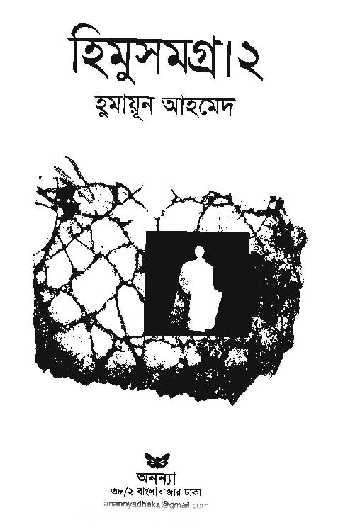
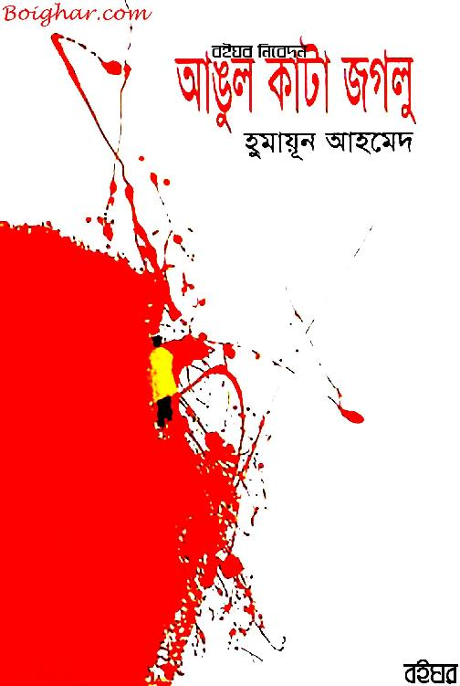

অনন্যা
৩৮/২ বাংলাবাজার, ঢাকা
প্রথম প্রকাশ ০ নভেম্বর ২০১২
দ্বিতীয় মুদ্রণ ০ ফেব্রুয়ারি ২০১৫
স্বত্ব ০ লেখক
প্রচ্ছদ ০ ধ্রুব এষ
কম্পোজ ০ তন্বী কম্পিউটার, ৩৮/৪ বাংলাবাজার, ঢাকা-১১০০
মুদ্রণ ০ পাণিনি প্রিন্টার্স, ১৪/১ তনুগঞ্জ লেন সূত্রাপুর ঢাকা
দাম ০ পাঁচশত পঞ্চাশ টাকা
ISBN 984 70105 05597
Himu Samagra/2 by Humayun Ahmed
Published By : Monirul Hoque, Ananya, 38/2 Banglabazar, Dhaka-1100
Second Edition : February 2015, Cover Design : Dhrubo Esh
Price:550.00 Taka Only
U.K Distributor Sangeeta Limited
22 Brick Lane, London
U.S.A Distributor Muktadhara
37-69, 74 St 2nd Floor, Jackson Heights, N.Y.
Canada Distributor o Anyamela
300 Danforth Ave.. Toronto (1st floor) suite-202
Canada Distributor ATN Mega Store
2976 Danforth Ave., Toronto
প্রকাশকের কথা
হিমুসমগ্র-২ প্রকাশিত হল ৷ এব. আগে ১৫টি হিমু-বই নিয়ে আমরা প্রকাশ করেছিলাম হিমুসমগ্র, ২০০৬-এ ৷ ১১৮৪ পৃষ্ঠার সেই বইয়েৱ ভুমিকায় হূমায়ূন আহমেদ লিখেছিলেন, হিমুকে নিয়ে কতগুলি বই লিখেছি নিজেও জানিনা। আমরা এখন জানি হিমুকে নিয়ে লেখা হূমায়ূন আহমেদের প্রকাশিত বইয়ের সংখ্যা ২১ ৷ প্রথম সংকলনের পর আরো ৬টি বই। পরের এই ৬টি হিমু-বই নিয়েই. বর্তমান হিমুসমগ্র-২ ৷ প্রকাশনালগ্নে যতটা আনন্দ ঠিক ততটাই বিষাদে আমরা আচ্ছন্ন ৷ কারণ হুমায়ূন আহমেদ আর কখনও হিমু লিখবেন না !
সূচিপত্র
আঙ্গুল কাটা জগলু/০৬
হলুদ হিমু কালো র্যাব/১১৭
আজ হিমুর বিয়ে/২০৯
হিমু রিমান্ডে/৩১১
হিমুর মধ্যদুপুর/৪০৭
হিমুর নীল জোছনা/৫১৪
হিমুর আছে জল/৬০২
হিমু এবং একটি রাশিয়ান পরী/৬৮৯
হিমু এবং হার্ডার্ড PhD. বল্টু ভাই/৭৮৪
ময়ূরাক্ষীর তীরে/৮৯২

আঙুল কাটা জগলু
হুমায়ূন আহমেদ
www.boighar.com
#####
স্থান : ফুলবাড়িয়া বাস টাৰ্মিনালের নর্দমার ডান পাশ।
সময় : সন্ধ্যা হবে-হবে করছে।
মাস : আষাঢ়ের শেষ কিংবা শ্রাবণের শুরু ।
তারিখঃ জানা নেই।
আমি হিমু, তাকিয়ে আছি আকাশের দিকে। কবিরা আকাশের মেঘ দেখে আপ্লুত হন। তবে তারা বাস টার্মিনালের নর্দমার পাশে পদাঁড়িয়ে আকাশ দেখেন না ।
নর্দমার বিকট গন্ধ নাকে লাগছে। আকাশের দিকে তাকিয়ে মনে হচ্ছে, গন্ধটা আকাশ থেকে আসছে।
আকাশ মেঘে মেঘে অন্ধকার। মেঘের ভাব দেখে মনে হচ্ছে ঢাকা শহরে ঝাঁপিয়ে পড়ার ব্যাপারে সে সিদ্ধান্ত নিয়ে ফেলেছে, তবে ঠিক কখন ঝাঁপিয়ে পড়বে এই ব্যাপারে হিসাবনিকাশ করছে। বুঝতে চেষ্টা করছে সে কখন নামলে শহরের মানুষ সবচেয়ে বেশি ঝামেলায় পড়বে। মেঘেদের মন-মেজাজ আছে। তারা রহস্য করতে পছন্দ করে।
ভাইজান, কী দেখেন?
কেউ-একজন আমার পাশে এসে দাঁড়িয়েছে। মোটামুটি বিস্মিত ভঙ্গিতে প্রশ্ন করেছে। আমি আকাশ থেকে দৃষ্টি ফেরালাম না।
ভাইজান, কিন্তু অখনো আমার প্রশ্নের জবাব দেন নাই। আসমানের দিকে চাইয়া কী দেখেন?
আমি আকাশ থেকে দৃষ্টি নামিয়ে আমার সামনে যে-মানুষটা দাঁড়িয়ে আছে তার দিকে তাকালাম।
আমার সামনে ছোটখাটো একজন মানুষ । বয়স চল্লিশের কাছাকাছি হবার কথা। গরমের সময়ও তার গায়ে ফ্লানেলের ফুলশার্ট। জিনসের প্যান্ট। প্যান্টের পা অনেকখানি গোটানো। পায়ে স্পঞ্জের স্যান্ডেল । জিনসের প্যান্টের সঙ্গে স্পঞ্জের স্যান্ডেলের কম্বিনেশন গ্রহণযোগ্য। বৃষ্টিবাদলায় স্পঞ্জের স্যান্ডেল খুব কাজে দেয়। যেটা গ্রহণযোগ্য না সেটা হলো স্পঞ্জের স্যান্ডেলের ফিতা দুটা দু রঙের। একটা সবুজ, একটা লাল।
একসময় স্পঞ্জের স্যান্ডেলের ফিতা আলাদা কিনতে পাওয়া যেত । ফিতা ছিঁড়ে গেলে বাজার থেকে নতুন ফিতা কিনে লাগানো হতো। এখন এই কাজ কেউ করে না। ফিতা ছিঁড়ে গেলে স্যান্ডেল ফেলে দিয়ে নতুন স্যান্ডেল কেনে। ওয়ানটাইম ইউজ। আমরা দ্রুত ওয়ানটাইমের দিকে এগুচ্ছি। এই অভ্যাস কি আমরা প্রকৃতির কাছ থেকে পেয়েছি? প্রকৃতিও এরকমই করে। একটা মেঘ একবার ব্যবহার করে ফেলে দেয়। আবার নতুন মেঘ তৈরি করে।
লোকটার গালে খোঁচা-খোঁচা পাকা দাড়ি। জর্দা দিয়ে পান খাওয়া অভ্যাস আছে। মুখ থেকে ভুরিভুর করে জর্দার গন্ধ আসছে। অভাবী মানুষদের মতো গাল ভাঙা, চোখ চকচক করছে। অভাবী মানুষদের চোখ কেন জানি পশুদের চোখের মতো চকচক করে ।
ভাইজান, আমার নাম মতি। মতি মিয়া ।
লোকটা এখন হ্যান্ডশোকের জন্যে হাত বাড়াল। এরকম রুগণ হাত আমি আগে দেখেছি বলে মনে পড়ল না। মানুষের অঙ্গপ্রত্যঙ্গের আলাদা আলাদাভাবে মৃত্যু হবার ব্যবস্থা থাকলে বলতে পারতাম, মতি নামের লোকটার ডান হাতের মৃত্যু হয়েছে।
আমার নাম তো বলেছি, মতি মিয়া। এখন আপনার নাম কী, জানতে পারি?
আমি বললাম, জানতে পারেন। আমার নাম ‘হি’।
মতি মিয়া অবাক হয়ে বলল, হি? হুদামুদা হি?
ঠিকই ধরেছেন। হুদামুদা হি। হিমু থেকে সংক্ষেপ করে হি। ভালো নাম ছিল হিমালয়। হিমালয় থেকে হিমু। হিমু থেকে হি। এরপর হবে । সংক্ষেপ করেই যাব ।
সংক্ষেপ করবেন কীজন্যে?
বাংলাদেশ বিমানের বিজ্ঞাপন দেখেন না? পৃথিবী ছোট হয়ে আসছে। আমাদের নামও ছোট হয়ে আসছে। আপনার নাম তো মতি ? সংক্ষেপ করে ফেলুন। এখন থেকে আপনার নাম 'ম' ।
ম?
জি ‘ম’। হুদামুদা ম।
মতি মিয়ার মুখের চামড়া শক্ত হয়ে গিয়েছে। ভুরু গেছে কুঁচকে । মনে হচ্ছে সে রাগ সামলানোর চেষ্টা করছে। চেষ্টা পুরাপুরি সফল হলো না। রাগ থেকেই গেল। সে চাপা- গলায় প্রায় ফিসফিস করে বলল, আমার সাথে বাইচলামি করেন? এখন আমি আপনেরে যে-কথাটা বলব সেটা শুনলে বাইচলামি বন হইয়া যাইব । পাতলা পায়খানাও ছুটতে পারে।
আমিও মতি মিয়ার মতো গলা নিচু করে বললাম, কথাটা কী?
আপনের ডাক পড়ছে।
কে ডাকছে?
আঙুল-কাটা জগলু ভাই ডাকছে। আমি আপনেরে উনার কাছে নিয়া যাব। দৌড় দেওনের চিন্তা মাথা থাইক্যা দূর করেন। চাইরদিকে আমরার লোক আছে। আমার পিছে পিছে হাঁটেন। ডাইনে-বামে চউখ দিবেন না।
চউখ বন্ধ করে ফেলি, হাত ধরে ধরে নিয়ে যান।
বাইচলামি অনেক করছেন। আর না। আঙুল-কাটা জগলু ভাইরে চিনছেন তো? নাকি চিনেন নাই। পরিচয় দিব? পরিচয়ের প্রয়োজন আছে?
আমি না-সূচক মাথা নাড়লাম। জগলু ভাইয়ের পরিচয় লাগে না। উনি অতি পরিচিত ব্যক্তি। পত্রিকার ভাষায় শীর্ষ সন্ত্রাসী । বাংলাদেশ সরকার তাকে ধরিয়ে দিতে পারলে পঞ্চাশ হাজার টাকা পুরস্কারের ঘোষণা দিয়েছে। সন্ত্রাসী হলেও উনি শিক্ষিত। ইউনিভার্সিটি থেকে ডিগ্রি-পাওয়া মানুষ। তাঁর পড়াশোনার বিষয় ইংরেজি সাহিত্য।
আঙুল-কাটা জগালু ভাইজান থাকেন কোথায়?
কথা না বইল্যা চুপেচাপে হাঁটেন। নো টক ।
আমি বললাম, বেশি দূর হলে একটা রিকশা নিয়ে নেই। যে-কোনাে সময় বৃষ্টি নামতে পারে।
মতি মিয়া কঠিন চোখে আমার দিকে তাকাল। সেই দৃষ্টি যে-কোন মানুষকে ভড়কে দেয়ার জন্যে যথেষ্ট। দৃষ্টির কারণে এখন মতি মিয়ার চেহারাই পালটে গেছে। সরল বোকা— বোকা চেহারার বাইরেও যে তার অন্য একটা চেহারা আছে, এটা দেখে ভালো লাগছে। মতি মিয়া হাঁটছেও দ্রুত। লম্বা লম্বা পা ফেলছে। মানুষ ছোট-খাট হলেও তার পা বেশ লম্বা।
ইজিচেয়ারে যিনি শুয়ে আছেন তিনিই কি আঙুল-কাটা জগালু ভাইজান? প্রথমেই চোখ গেল আঙুলের দিকে। আঙুল ঠিক আছে। শুধু ঠিক না, বেশ ভালোরকম ঠিক। লম্বা লম্বা সুন্দর আঙুল। হাতের সঙ্গে মানানসই। পামিস্টরা এই ধরনের হাতকে বলেন কনিকেল হ্যান্ড। কৌণিক হস্ত । এধরনের হাতের মানুষেরা শিল্প-সাহিত্যের অনুরাগী হয়। তারা হয় কোমল অন্তঃকরণবিশিষ্ট ভাবুক মানুষ।
উনার বাঁ হাতের মধ্যমায় সবুজ পাথরের আংটি। গায়ে কাজ-করা পাঞ্জাবি। পরনে সবুজ রঙের এক কালারের লুঙ্গি। তার টাইপের লোকজন লুঙ্গি পরে আয়েশি ভঙ্গিতে ইজিচেয়ারে শুয়ে আছে ভাবতে কেমন যেন লাগে। এদের তো টেনশনে অস্থির হয়ে থাকার কথা । “দুয়ারে প্রস্তুত গাড়ি” টাইপ ব্যাপার। পালাতে হবে কিংবা এক্ষুনি অ্যাকশনে যেতে হবে।
মতি ধাক্কা দিয়ে আমাকে কয়েক হাত এগিয়ে দিয়ে চাপাগলায় বলল, ওস্তাদ মাল আনছি।
জগলু ভাই চোখ তুলে একবার আমাকে দেখেই চোখ বন্ধ করে ফেললেন। মানুষটার চোখ সুন্দর, চেহারা সুন্দর। মাথাভরতি চুল। প্যাকেজ নাটকে নায়কের বড় ভাই চরিত্র দেওয়া যায় ধরনের চেহরা। যে বড় ভাই হয় ব্যাংকে কাজ করেন। কিংবা কলেজের প্রফেসর। দুই মেয়ে এবং স্ত্রী নিয়ে সংসার। একটা বড় খাটে স্বামী-স্ত্রী ঘুমান, বাচ্চা দুটা তাদের মাঝখানে থাকে। আমি জগলু ভাইয়ের বয়স আঁচ করার চেষ্টা করছি। কত হতে পারে? চল্লিশ?
মতি মিয়া বলল, নাম জিজ্ঞাস করলাম। বলতেছে নাম হি। বাইচলামি করে।
জগলু ভাই একপলকের জন্যে চোখ মেলেই বন্ধ করে ফেললেন। ঠাণ্ডা গলায় বললেন, তোকে নাম জিজ্ঞাস করতে বলি নাই। ধরে আনতে বলেছি। তুই সামনে থেকে যা।
মতি মিয়া সামান্য ধমকেই ভয়ে কঁকড়ে গেল। দ্রুত ঘর থেকে বের হতে গিয়ে দরজায় বাড়ি খেল। “উফ” বলে চাপা আওয়াজ করল। জগলু ভাই চোখ খুললেন না। চোখ বন্ধ অবস্থাতেই পাঞ্জাবির পকেট থেকে সিগারেট বের করলেন । ঠোঁটে সিগারেট দিলেন। দেয়াশলাইয়ের কাঠি দিয়ে আগুন জ্বালিয়ে সিগারেট ধরালেন। চোখ বন্ধ অবস্থায় দেয়াশলাই জ্বালানো বেশ কঠিন কাজ। দুই হাতে ভালো সিনক্রোনাইজেশনের প্রয়োজন হয়। শুধুমাত্র অন্ধরাই এই কাজটা পারে।
জগলু ভাই আমার দিকে হাত দিয়ে ইশারা করলেন। ইশরার অর্থ বসো কিংবা বসুন। মুখের কথায় আপনি-তুমি হয়। ইশারায় হয় না। আমি জগলু ভাইয়ের সামনে রাখা কাঠের চেয়ারে বসলাম। ছেয়ারে বসা ঠিক হচ্ছে কি না বুঝতে পারছি না। জগলু ভাই হয়ত আমাকে মেঝেতে বসতে বলেছেন। এখন এই ঘরে শুধু আমি এবং জগলু ভাই ।
মাঝারি ধরনের ঘর। আসবাবপত্র বলতে কয়েকটা কাঠের চেয়ার। একটা নিচু টেবিল। পুরনো আমলের হাতলওয়ালা ইজিচেয়ার। ঘরটার মধ্যে মধ্যবিত্ত মধ্যবিত্ত ভাব আছে, তবে বেশ বড় ফ্ল্যাটস্ক্রিন টিভি আছে। টিভির সঙ্গে ডিভিডি প্লেয়ার লাগানো। জগলু ভাই সম্ভবত টিভি দেখতে পছন্দ করেন। এমন হতে পারে, কোনো-একটা বিশেষ সিরিয়াল তিনি খুব মন দিয়ে দেখেন একটাও মিস করেন না।
তার একটা ইন্টারভিউ নিতে পারলে ভালো হতো। শীর্ষ সন্ত্রাসী আঙুল-কাটা জগলু ভাই বিষয়ে মানুষজন জানতে পারত।
প্রশ্ন ; জনাব আপনার প্রিয় টিভি প্রোগ্রাম কোনটি?
উত্তর : কৌন বনেগা ক্রোড়পতি ।
প্রশ্ন : আপনার প্রিয় রঙ?
উত্তর : সবুজ।
প্রশ্ন : আপনার প্রিয় লেখক?
উত্তর : শেক্সপিয়ার ।
জগলু ভাই চোখ মেলেছেন। আধশোয়া অবস্থা থেকে তিনি এখন বসা অবস্থানে এসেছেন। আগের সিগারেট শেষ হয়ে গেছে, এখন তিনি দ্বিতীয় সিগারেট ধরাচ্ছেন। চোখ খোলা অবস্থায় দেয়াশলাইয়ের কাঠি জ্বালাতে তার বেশ বেগ পেতে হচ্ছে। এই কাজটা তিনি মনে হয় চোখ বন্ধ অবস্থাতেই ভালো পারেন।
তিনি বললেন (আমার দিকে না তাকিয়ে), তোমার নাম হি?
আমি বললাম, সংক্ষেপে হি। হিমু থেকে হি।
সংক্ষেপ কে করেছে?
আমিই করেছি।
কেন?
এখন সংক্ষেপের জমানা। সবকিছু সংক্ষেপ হয়ে যাচ্ছে। এইজন্যে নামটাও সংক্ষেপ করলাম ।
সবকিছু সংক্ষেপ হয়ে যাচ্ছে মানে কী? কী সংক্ষেপ হচ্ছে?
মানুষের জীবন। যে-ছেলের বাঁচার কথা আশি বছর সে বিশ বছর বয়সে বোমা খেয়ে রাস্তায় পড়ে গেল ।
তোমার ঝোলার ভেতর কী?
তেমন কিছু না।
ঝোলা উপুড় করে মেঝেতে ধরো। দেখি কী আছে।
জগলু ভাই বেশ আগ্রহ নিয়ে ঝুঁকে এসেছেন। তিনি মনে হয় ভাবছেন, ইন্টারেস্টিং কিছু বের হবে। ইন্টারেস্টিং কিছু বের হবার কথা না। ঝোলাতে কী আছে আমি নিজেও অবিশ্যি ভুলে গেছি। আমি নিজেও আগ্ৰহ নিয়ে তাকিয়ে আছি।
আমি ঝোলা উপুড় করলাম। দুটা বলপয়েন্ট বের হলো। একটা খাতা বের হলো। আর বের হলো গ্লুকোজ বিস্কিটের প্যাকেট। প্যাকেট খোলা । আমি কয়েকটা খেয়েছি, বাকি সব প্যাকেটে আছে। জগলু খুব সাবধানে বিস্কিটের প্যাকেট হাতে নিলেন। একটা একটা করে বিস্কিট বের করছেন, শুঁকে দেখছেন মেঝেতে ফেলছেন। প্রতিটি বিস্কিট দেখা শেষ হবার পর খাতাটা হাতে নিলেন। সেটিও শুঁকে দেখে রেখে দিলেন। উনার বোধহয় কুকুর- স্বভাব। সব জিনিস শুঁকে দেখতে হয়।
তুমি পুলিশের ইনফরমার?
জি না।
পুলিশের ইনফরমার না হলে আমার পিছনে পিছনে ঘুরছি কেন? গত এক সপ্তাহে আমি পাঁচবার তোমাকে আমার আশপাশে দেখেছি। তোমাকে লোকেট করা সহজ । হলুদ পাঞ্জাবি দেখেই তোমাকে আমি চিনি।
আমি বিনয়ের সঙ্গে বললাম, জগলু ভাই, আমি পুলিশের ইনফরমার হলে প্রতিদিন হলুদ পাঞ্জাবি পরে আপনাকে খুঁজতাম না। একেক দিন একেক পোশাক পারতাম ।
তুমি কি মজিদের লোক?
কোন মজিদ বলুন তো! এক মজিদকে চিনি, ঠেলাওয়ালা। ঠেলা চালায় ।
আর কোনো মজিদকে চেন না?
জি না ।
বোমা মজিদের নাম শুনেছ?
জি না । উনি নিশ্চয়ই আপনার মতো বিখ্যাত না। আপনার মতো বিখ্যাত হলে নাম শুনতাম ।
তুমি পুলিশের ইনফরমারও না, আবার মজিদের লোকও না?
জি না ।
জগলু ভাই আমার দিকে তাকিয়ে আছেন। একজন অতি ভয়ঙ্কর ক্রিমিনাল; তার চোখের দৃষ্টি কঠিন হবার কথা। দৃষ্টি সেরকম না। চোখের দৃষ্টিতে প্রশ্ৰয়-প্রশ্রয় ভাব আছে।
তার চোখের দৃষ্টির ওপর ভরসা করেই বললাম, জনাব, আপনাকে একটা প্রশ্ন কি করব? ব্যক্তিগত কৌতুহল।
কী প্রশ্ন?
আপনার আঙুল তো ঠিক আছে। আপনার নাম আঙুল-কাটা জগালু কেন?
আমি অন্যের আঙুল কাটি ।
সব আঙুল কেটে দেন, না একটা-দুটা কাটেন?
তিনি আমার প্রশ্নের জবাব না দিয়ে ঠাণ্ডা গলায় ডাকলেন, মতি!
মতি মিয়া ঝড়ের বেগে ছুটে এল। ঘরে ঢুকতে গিয়ে আবার দরজার সঙ্গে কলিসান। এই ব্যাচারার মনে হয় ধাক্কা রাশি। জগালু ভাই বললেন, চৌবাচ্চায় পানি আছে?
মতি বলল, অল্প আছে।
চৌবাচ্চা পানি দিয়ে ভরতি কর। একে নিয়ে যা, এক মিনিট করে মাথা পানিতে ডুবায়ে রাখবি । তারপর জিজ্ঞেস করবি সে কার লোক, কী সমাচার। তখন মুখে বুলি ফুটবে। আমার ধারণা মজিদের লোক ।
জলচিকিৎসাতে যদি কাজ না হয়। সকালে বা হাতের কানি আঙুলটা কেটে দিস ।
আমি বললাম, জগলু ভাই, এক মিনিট করে চুবায়ে রাখলে জলচিকিৎসায় কাজ হবে না। আমি ডুব দিয়ে দেড় মিনিট থাকতে পারি।
আমার রসিকতা করার চেষ্টায় জগলু ভাই বিভ্রান্ত হলেন না। হাত দিয়ে মাছি তাড়ানোর মতো ভঙ্গি করলেন। ভাবটা এরকম যেন আমার বিষয়ে সিদ্ধান্ত নেয়া শেষ ।
মতি মিয়া আমাকে টেনে নিয়ে যাচ্ছে। তার মুখভরতি হাসি। মনে হয় পানিতে মাথা চোবানো এবং আঙুল কাটা এই দুটি কাজেই সে আনন্দ পায়। বর্তমান সময়ে মানুষের প্রধান সমস্যা কাজ করে আনন্দ না-পাওয়া। মতি মিয়া পাচ্ছে। তার জব স্যাটিসফেকশন আছে। এটা খারাপ কী?
আমি এখন আছি চৌবাচ্চাঘরে। মোগল আমল হলে বলতে পারতাম হাম্মামখানা। জানালাবিহীন ঘৱ। একটাই দরজা। ঘরের এক কোণে চৌবাচ্চা। ট্যাপ খোলা হয়েছে। চৌবাচ্চায় পানি দেওয়া হচ্ছে। আমার সঙ্গে এক প্রৌঢ়ও আছেন। তার হাত বাঁধা। প্রথম যখন ধাক্কা দিয়ে আমাকে এই ঘরেও ঢোকানো হয়, তখন অন্ধকারের কারণে প্রৌঢ়ের মুখ দেখতে পাইনি। এখন চোখে অন্ধকার সয়ে এসেছে। প্রৌঢ়কে দেখতে পাচ্ছি।
দীর্ঘদিন ব্যালান্সড ডায়েট খাওয়া চেহারা। চব্বিশ ঘণ্টা এসি রুমে থাকলে চামড়ায় তেলতোলা যে ভাব আসে, তা এসেছে। পরনে ফতুয়া ধরনের পোশাক । জিনিসটিতে জটিল সুচের কাজ করা হয়েছে, অর্থাৎ দামি পোশাক। তবে ভদ্রলোক চুপসে গেছেন। তার দামি ফুতুয়া ঘামে ভেজা। তিনি ক্রমাগত নড়াচড়া করছেন। ঘরে আমরা দুইজন। দরজা বাইরে থেকে তালাবদ্ধ। দরজার ফাঁক দিয়ে কিছু আলো আসছে। আলোর একটা রেখা প্রৌঢ়ের মাথার ঠিক মাঝখানে পড়েছে। নাক এবং ঠোঁটের মাঝখান আলো হয়ে আছে। বাকিটা অন্ধকার। ফেলিনি কিংবা বাৰ্গম্যানের মতো পরিচালক থাকলে এই লাইটিং দেখে মজা পেতেন।
তালাবন্ধ দরজার বাইরে লোকজন হাঁটাহাঁটি করছে বোঝা জাচ্ছে। একবার ঘড়ঘড় শব্দ হলো। মনে হচ্ছে কেউ ভারী কিছু টেনে আনছে।
ঘড়ঘড় শব্দে প্রৌঢ় ভদ্রলোক এমনভাবে কেঁপে উঠলেন যেন ট্যাঙ্ক আসছে। এক্ষুনি তাঁর দিকে কামান তাক করে গুলি করা হবে। তিনি রাজহাঁস টাইপ ফ্যাসফ্যাসে গলায় বললেন, কী ব্যাপার? শব্দ কিসের? প্রশ্নটা তিনি আমার দিকে তাকিয়ে করলেন ।
আমি বললাম, মনে হয় ট্যাঙ্ক । ছোট ছোট রাশিয়ান ট্যাঙ্ক যখন চলে এরকম শব্দ হয়। ব্যালাড অব এ সোলাজার ছবিতে এরকম শব্দ শুনেছি।
ভদ্রলোক মোটামুটি কঠিন গলায় বললেন, তুমি কে?
প্রথম আলাপেই সরাসরি তুমি। বোঝা যাচ্ছে, এই লোক তুমি বলেই অভ্যস্ত। শিক্ষকরা যেমন যাকে দেখে তাকেই ছাত্ৰ মনে করে, এই লোকও যাকে দেখে তাকেই মনে হয় কর্মচারী মনে করে। আমি ভদ্রলোকের দিকে তাকিয়ে বিনীত গলায় বললাম, স্যার আমার নাম জানতে চাচ্ছেন? আমার নাম হিমু। ইদানীং সংক্ষেপ করে বলছি হি।
তোমাকে এরা ধরেছে কীজন্যে?
আঙুল কাটার জন্যে ধরে নিয়ে এসেছে স্যার। ওস্তাদ জগলু ভাই মানুষের আঙুল কাটতে পছন্দ করেন। শুনেছেন বোধহয়। আপনার আঙুল যেমন কাটবে। আমারটাও কাটবে। জগলু ভাইয়ের কাছে গরিব-ধনী সমান। স্যার, আপনার পরিচয়টা কি জানতে পারি? আপনার কিসের ব্যবসা ?
আমি মনসুর গ্রুপ অব ইন্ডাস্ট্রিজের মালিক। আমার নাম মনসুর খান।
শুনে ভালো লাগল স্যার। আমার হাত বাঁধা । হাত খোলা থাকলে আপনার সঙ্গে হ্যান্ডশেক করতাম। আপনাদের মতো লোকদের সঙ্গে হ্যান্ডশেক করতে পারা ভাগ্যের ব্যাপার। আপনাকে ধরেছে কীজন্যে?
টাকা চায় । বিশ লাখ টাকা চায় ।
দিয়ে দেন। বিশ লাখ টাকা তো আপনার হাতের ময়লা। আপনার একটা আঙুলের দাম নিশ্চয়ই বিশ লাখের বেশি।
টাকা দিয়ে দিতে বলেছি। সম্ভবত এর মধ্যে দিয়েও দিয়েছে।
তা হলে তো স্যার আপনি রিলিজ নিয়ে চলে যাচ্ছেন।
আই হোপ সো। এরা চৌবাচ্চায় পানি দিচ্ছে কেন?
আমার জন্যে জলচিকিৎসার ব্যবস্থা করবে। জগলু ভাই অর্ডার দিয়েছেন চৌবাচ্চা ভরতি হলে এক মিনিট করে যেন আমার মাথা চৌবাচ্চায় ডুবানো হয়। পেট থেকে কথা বের করার পদ্ধতি ।
বলো কী তোমার কথাবার্তা শুনে তো মনে হচ্ছে না তুমি ভয় পাচ্ছ।
আমি বললাম, ভয় পেলে যদি কোনো লাভ হতো তা হলে ভয় পেতাম। লাভ যখন হবে না, শুধু শুধু ভয় পাওয়ার দরকার কী? স্যার, আপনি পানিতে ডুব দিয়ে কতক্ষণ থাকতে পারেন?
কেন?
কিছুই তো বলা যায় না, ধরেন আমাকে বাদ দিয়ে আপনাকে পানিতে চুবানো শুরু করল।
আমি তো তোমাকে বলেছি তারা যা চেয়েছে সেটা দিতে বলেছি। আমি এখন রিলিজ নিয়ে চলে যাব। আমি আর দেশেই থাকব না । কানাডায় ইমিগ্রেশন নেওয়া আছে, মেয়েকে নিয়ে চলে যাব কানাডা।
আপনার মেয়ের নাম কী?
আমার মেয়ের নাম দিয়ে তোমার দরকার কি?
স্যার, আপনি রেগে যাচ্ছেন কেন?
তুমি ফালতু কথা বলছ কেন?
ঠিক আছে স্যার, আর কথা বলব না, একটা ছোট্ট উপদেশ দেই? বিপদে উপদেশ কাজে লাগতে পারে ।
ফাজিল! চুপ, উপদেশ দিতে হবে না।
গালাগালি করছেন কেন স্যার? আমার উপদেশটা শুনে রাখুন। পানিতে যখন মাথাটা চুবাবে নিশ্বাস নিবেন না, হাঁ করবেন না, নড়াচড়া করবেন না। ভয়ে যদি নিশ্বাস নিয়ে ফেললেন, বিরাট বিপদ হবে। নাক দিয়ে পানি ঢুকলে সমস্যা। পানি ঢুকে যাবে ফুসফুসে। জীবন-সংশয় হবে। দেড়-দুই মিনিট নিশ্বাস বন্ধ করে থাকা খুবই কষ্টকর, তবে অসম্ভব না। গিনেস বুক অব রেকর্ডসে তিন মিনিট পানিতে ডুব দেবার কথা আছে।
ভদ্রলোক ক্ষিপ্ত গলায় বললেন, চুপ বললাম, চুপ।।
আমি মধুর ভঙ্গিতে বললাম, চেষ্টা করবেন। শান্ত থাকতে । শান্ত থাকলে শরীরের অক্সিজেনের প্রয়োজন কিছুটা কমে।
তুই শান্ত থাক। তুই অক্সিজেনের পরিমাণ কমা।
তুইতোকারি করছেন কেন স্যার? আমরা দুইজন একই পথের পথিক । জলচিকিৎসার রোগী। আমাদের মধ্যে পারস্পরিক সহমর্মিতা......
চুপ।
ভদ্রলোক হয়তো আরো হইচই করতেন। সুযোগ পেলেন না, দরজা খুলে গেল। মতি মিয়া ঢুকল। চৌবাচ্চার পানি পরীক্ষা করল। চৌবাচ্চা এখনো ভরতি হয়নি। আমি প্রৌঢ়ের দিকে তাকিয়ে বললাম, চৌবাচ্চাটা ভরতি হতে এতক্ষণ লাগছে কেন বুঝলাম না। মনে হয় কোনো ফুটো আছে। স্যার, আপনি কি চৌবাচ্চার অঙ্ক জানেন-একটা নল দিয়ে পানি ঢুকে আরেকটা দিয়ে চলে যায়?
প্রৌঢ় আগের মতো গলাতেই ধমক দিলেন, চুপ!
আমি চুপ করলাম। মতি মিয়া এখন প্রৌঢ়ের দড়ির বাঁধন খুলছে। খুলতে খুলতেই বলল, আপনার জন্যে সুসংবাদ । এখন চলে যাবেন। ওস্তাদ আপনাকে ছেড়ে দিতে বলেছে। চউখ বান্দা অবস্থায় মাইক্রোবাসে তুলব। দূরে নিয়ে ছেড়ে দিব। রিকশা নিয়ে চলে যাবেন।
প্রৌঢ় বললেন, থ্যাঙ্ক য়্যু ।
মতি মিয়া বলল, আপনার তকলিফ হয়েছে, কিছু মনে নিবেন না।
কোনো অসুবিধা নেই, ঠিক আছে।
আপনার ভাগ্য ভালো, আপনে অল্পের ওপর পার পাইছেন।
প্রৌঢ় আমার দিকে শেষ তাকানো তাকিয়ে ঘর থেকে বের হলেন । একে অবিশ্যি তাকানো বলা যাবে না। তিনি তীরনিক্ষেপের মতো দৃষ্টিনিক্ষেপ করলেন বলা চলে।
আকাশে মেঘ ডাকছে। যে-মেঘের নামার কথা ছিল সেই মেঘ তা হলে এখনো নামেনি। বৃষ্টি নামার আগের মেঘের ডাকের সঙ্গে বৃষ্টি নামার পরের মেঘের ডাকের সামান্য পার্থক্য আছে। রূপা নামের এক তরুণী আমাকে এই পার্থক্য শিখিয়েছিল । আমি শিখিয়েছি আমার খালাতো ভাই বাদলকে। মেঘবিদ্যা পুরোপুরি নষ্ট হতে দেওয়া ঠিক না। বাদল এই বিদ্যার চর্চা করছে কি না জানি না। অনেক দিন তার সাথে দেখা হয় না। ইদানীং সে কিছু ঝামেলার ভেতর দিয়ে যাচ্ছে। কী-একটা গান তার মাথায় ঢুকে গেছে। সে যেখানে যায়, যা-ই করে তার মাথায় একটা গানের লাইন লাজে। বড়ই অদ্ভুত গানের কথা। প্রথম লাইনটা হচ্ছে, ‘নে দি লদ রয়াওহালা গপা ।” সমস্যা হচ্ছে এই গান নাকি সে আগে কখনো শোনেনি । যে গান সে কোনোদিন শোনেনি। সেই গান কী করে তার মাথায় ঢুকল কে জানে!, তার মাথা থেকে কি গান দূর হয়েছে? একটা টেলিফোন হাতের কাছে থাকলে বাদলকে জিজ্ঞেস করতে পারতাম। থানাওয়ালাদের হাতে যখন ধরা খেয়েছি তখন তারা মাঝেমধ্যে টেলিফোন করতে চাইলে দিত। বেশির ভাগ সময়ই অবিশ্যি দেখা যেত তাদের টেলিফোন কাজ করে না। ডায়ালটোন আসে না, আর যদিও আসে শোঁশোঁ আওয়াজ হয়। বাংলাদেশে বেশির ভাগ সময় দুই জায়গার টেলিফোন নষ্ট থাকে-পুলিশের টেলিফোন এবং হাসপাতালের টেলিফোন। এদেরকে কি জিজ্ঞেস করে দেখব একটা টেলিফোন করতে দিবে কি-না।
বন্ধ দরজা ধড়াম করে খুলে গেল। চার-পাঁচজনের একটা দল প্রবেশ করল। দলের পুরোভাগে জগলু ভাই আছেন। এবং আমাদের প্রৌঢ়—মনসুর গ্রুপ অব ইন্ডাস্ট্রিজের মালিক মনসুর খাঁ সাহেবও আছেন। তাঁর মুখ ঝুলে পড়েছে। এবং তিনি হাঁপানি রোগীদের মতো টেনে টেনে শ্বাস নিচ্ছেন।
ঘটনা আঁচ করতে পারছি। বিশ লক্ষ টাকা জায়গামতো পৌছেনি। মনসুর সাহেবের মেয়ে হয়তো পুলিশে খবর দিয়েছে। সাদা পোশাকের পুলিশ একটা বেড়াছেড়া বাধিয়েছে। কিংবা টাকার বদলে সুটকেসভরতি পুরনো খবরের কাগজ পাঠিয়ে দিয়েছে। তার বাবা যে কত বড় বিপদে আছে সে বোধহয় আঁচ করতে পারছে না। জগলু ভাইয়ের হাতে সিগারেট। তিনি ঘনঘন সিগারেট টানছেন। যতবারই টানছেন ততবারই আড়াচোখে তার রিস্টওয়াচের দিকে তাকাচ্ছেন। এই প্রথম তার মধ্যে উত্তেজনা লক্ষ করলাম। উত্তেজনায় তার নাক ঘামছে। সমুদ্রবিদ্যা বইয়ে আছে, মানসিক উত্তেজনাকালে যে-পুরুষের নাক ঘামে সে স্ত্রী-সোহাগী হয়। জগলু ভাই কি স্ত্রী-সোহাগী ?
জগলু ভাই বললেন, বুড়ার মাথা পানিতে চুবাও । তার আগে বদমাইশের মেয়েটাকে মোবাইল টেলিফোনে ধরো। বুড়ার মাথা পানি থেকে তোলার পর টেলিফোনটা বুড়ার হাতে দাও। বুড়া মেয়ের সঙ্গে কথা বলুক। ঘুঘু দেখেছে, ফাঁদ দেখেনি। আমার সঙ্গে টালটুবাজি?
টেলিফোনে মেয়েকে ধরতে ঝামেলা হলো। নেটওয়ার্ক পাওয়া যায় না। যখন নেটওয়ার্ক পাওয়া যায়। তখন মেয়ের টেলিফোন থাকে বিজি । এদিকে সময় চলে যাচ্ছে। জগলু ভাইয়ের রাগ ক্রমেই বাড়ছে। চৌবাচ্চা পূৰ্ণ । এক্ষুনি হয়তো পানি উপচে পড়বে।
জগলু ভাই বললেন, কী, লাইন পাওয়া গেছে?
মতি মিয়ার হাতে টেলিফোন। সে ভীত গলায় বলল, জি না ।
একটা কানেকশন ঠিকমতো করতে পারো না? নাম্বার জানো? বোতাম ঠিকমতো টিপছ? টিলিফোন হারুনের কাছ দাও। তুমি জীবনে কোনোএকটা কাজ ঠিকমতো করতে পেরেছ বলে আমার মনে পড়ে না।
হারুনের পারফরমেন্স মতি মিয়ার চেয়েও খারাপ । সে বোতাম টেপার আগেই মোবাইল সেট হাত থেকে ফেলে দিল । সেট সে মেঝে থেকে অতি দ্রুত তুলল। ঝড়ের গতিতে বোতাম টিপল। ছয়-সাত বার ‘হ্যালো, হ্যালো” বলল, লাভ কিছু হলো না।
জগলু ভাই বললেন, কী হলো? এখনো লাইনে পাচ্ছ না?
হারুন কাঁপা-কাঁপা গলায় বলল, টেলিফোন অফ করে রেখেছে। রিং হয় ধরে না।
জগলু ভাই থমথমে গলায় বললেন, বেকুবের মতো কথা বলবে না। যে-মেয়ের বাপের এই অবস্থা, আমাদের সঙ্গে যেখানে তার যোগাযোগের একমাত্র ব্যবস্থা টেলিফোন, সেখানে সে টেলিফোন অফ করে রাখবে? আমি কোনো বেকুব পছন্দ করি না, আর আমাকে চলতে হয় বেকুব নিয়ে।
এখন চৌবাচ্চা কানায় কানায় পূর্ণ। টেলিফোনে মেয়েটিকে ধরা যাচ্ছে না বলে চৌবাচ্চা কাজে লাগছে না। বাংলা ছবির কোন দৃশ্য হলে এই অবস্থায় ব্যাকগ্রাউন্ডে সুপার টেনশন মিউজিক বাজত। মিউজিকের মধ্যে আফ্রিকান ড্রামের শব্দ-ড্রিম ড্রিম ড্রিম। এই ড্রিম ড্রিামের সঙ্গে হার্ট বিটের শব্দ মিশিয়ে মিশ্র মিউজিক ।
আমি বললাম, জগলু ভাই, আমি কি ট্রাই করে দেখব? টেলিফোনে কানেকশন পাওয়ার লাক আমার খুব ভালো। সবসময় এক চান্সে লাইন পাই ।
দলনেতা এবং দলের সদস্যরা সবাই একসঙ্গে আমার দিকে তাকাল । গুগলু ভাইয়ের চোখ চকচক করছে। তার সিগারেট নিভে গেছে। তিনি নেভা সিগারেটই টানছেন।
মতি বলল, ওস্তাদ, এইটারে আগে পানিত চুবাই। এই কুত্তা বড় দিগদারি করতেছে।
জগলু ভাই হ্যাঁ-সূচক মাথা নাড়তে গিয়েও নাড়লেন না। শেষমূহুর্তে মত বদলে বললেন, এর হাতের বাঁধন খুলে দিয়ে এর হাতে টেলিফোন দে ।
আমি বললাম, নাম্বারটা দিন।
টেলিফোন হাতে নিয়ে যে ভীতমুখে দাঁড়িয়ে আছে—হারুন ভাইজান-সে বলল, রিডায়ালে টিপলেই হবে।
আমি বললাম, রিডায়ালে টিপলে হবে না হারুন ভাই। একেকজনের একেক সিস্টেম । আমি রিডায়ালের লোক না । আমি ডাইরেক্ট ডায়ালের লোক। নাম্বারটা বলুন।
হারুন ভাইজান নাম্বার বললেন। আমি বোতাম টিপলাম। সেট কানে লাগানোর আগে মনসুর খাঁ সাহেবের দিকে তাকিয়ে বললাম, মেয়েটার নাম কী? খাঁ সাহেবের মুখ আরো ঝুলে গেছে। তিনি এমনভাবে তাকাচ্ছেন যেন প্রশ্ন শুনতে পাননি।
স্যার, আপনার মেয়েটার নাম বলুন।
মিতু।
মিস না মিসেস?
মিস না মিসেস দিয়ে কোনো দরকার আছে?
অবশ্যই দরকার আছে। হ্যালো মিস মিতু বলব না হ্যালো মিসেস মিতু বলব জানাতে হবে না?
ওর বিয়ে হয়নি ।
বয়স কত?
বয়স দিয়ে কী হবে?
কোন বয়সের মেয়ে সেটা হিসাব করে কথা বলতে হবে না?
উনিশ ।
জগলু ভাই আমার দিকে তাকিয়ে বিরক্ত গলায় বললেন, তোমার কথা বলার কিছু নাই। তুমি লাইন ধরে দাও। প্রথমবারে যদি না পাও আমি স্ট্রেইট তোমাকে পানিতে চুবাব। তোমার রস বেশি হয়েছে। রস বের করে রস দিয়ে গুড় বানায়ে দিব। আসার পর থেকে ফাজলামি করেই যাচ্ছ। আমি দেখতে চাই তুমি কতক্ষণ ফাজলামি করতে পার।
প্রথম চেষ্টাতেই লাইন পাওয়া গেল। অতি মিষ্টি গলায় একটি মেয়ে বলল, হ্যালো ।
আমি বললাম, মিতু, ভালো আছ?
আপনি কে?
আমাকে তুমি চিনতে পারবে না। আমার নাম হিমু। সংক্ষেপ হি।
কী চান আপনি?
ধমক দিয়ে কথা বোলো না মিতু। আমি জগলু ভাইয়ের আপনা লোক। জগলু ভাই আমার পাশেই দাঁড়িয়ে আছেন। তোমার কথা উনি স্পষ্ট শুনতে পাচ্ছেন। জগলু ভাইকে চিনতে পারছি তো? আঙুল-কাটা জগলু। কঠিন বস্তু। কচাকচ আঙ্গুল কাটনেওয়ালা।
মিতুর আর কোনো কথা শোনা যাচ্ছে না। মনে হচ্ছে সে নিজেকে সামলানোর জন্যে সময় নিচ্ছে। আমি হাত দিয়ে রিসিভার চাপা দিয়ে জগলু ভাইয়ের দিকে তাকিয়ে বললাম, ওস্তাদ, আপনি কথা বলবেন? নাকি প্ৰাথমিক আলাপ আমিই করব?
জগলু ভাইও কিছু বলছেন না। তাঁর তীক্ষ্ণ দৃষ্টি আমার চোখে । মনে হচ্ছে তিনি পলক ফেলছেন না। কাজেই আমি আবারও টেলিফোন কানে নিলাম ।
হ্যালো মিতু। তোমরা কাজটা ঠিক করনি। বিশ লাখ টাকা তোমাদের কাছে এমন কোনো টাকা না । সেই টাকা নিয়ে তোমরা ভাওতাবাজি করলে। ওস্তাদ খুব রাগ হয়েছেন। এখন আমরা তোমার বাবাকে ওয়াটার ট্রিটমেন্ট দেব। আয়োজন সম্পন্ন, এখন উনার মাথা পানিতে চুবানো হবে। পরপর তিনটা দেড় মিনিটের সেশন হবে।
বাবা কি আপনার আশপাশে আছে?
অবশ্যই আছেন। জলচিকিৎসার জন্যে অধীর আগ্রহে অপেক্ষা করছেন ।
বাবাকে দিন ।
এখন তো উনাকে দেয়া যাবে না। প্রথম ডোজ ওষুধ পড়ার পর দেয়া হবে ।
প্রথম ডোজ ওষুধ মানে?
প্রথম ডোজ ওষুধ মানে প্রথমবার পানিতে চুবানো। জলচিকিৎসার পর আমরা কী করব শোনো, শল্যচিকিৎসা উনার একটা আঙুল কেটে কুরিয়ার সার্ভিসে তোমাকে পাঠিয়ে দেওয়া হবে। তবে শেষ সুযোগ এখনো আছে। টাকাভরতি সুটকেস হাতের কাছে রাখো। প্রথমবার আমাদের সঙ্গে টালটুবাজি করেছ বলেই এই দফায় টাকার পরিমাণ কিছু বেড়েছে। এখন হয়েছে পঁচিশ লাখ। আমি এক ঘণ্টার মধ্যে টাকা নিতে আসছি। দারোয়ানকে আমার কথা বলে রাখ। বলামাত্ৰই যেন গেট খুলে দেয়। ভালো কথা, তোমাদের বাড়িতে কুকুর নেই তো? কুকুর থাকলে আমি যাব না। অন্য লোক যাবে। আমি কুকুর ভয় পাই।
আপনি বাবাকে টেলিফোন দিন ।
একটু দাঁড়াও, ওস্তাদ জগালু ভাইকে জিজ্ঞেস করে দেখি তিনি পারমিশন দেন। কি না। লিডারের পারমিশন ছাড়া টেলিফোন দিতে পারব না । উনি আমাদের লিডার।
জগলু ভাই চোখের ইশারায় অনুমতি দিলেন। আমি টেলিফোন মনসুর সাহেবের কানো ধরলাম। তিনি কোনো কথা বলতে পারলেন না। হেঁচকি তুলে কাঁদতে লাগলেন। ওপাশ থেকে মেয়ের কথা শোনা যাচ্ছে, কে, বাবা? বাবা? হ্যালো। প্লিজ কুল ডাউন । তোমাকে রিলিজ করার জন্যে যা করার করব। কুল ডাউন বাবা। কুল ডাউন।
আমরা আবার পূর্বাবস্থায় ফিরে গেছি। চৌবাচ্চা সামনে রেখে দুজন বসে আছি। আমার দৃষ্টি চৌবাচ্চার দিকে। মনসুর সাহেব তাকিয়ে আছেন আমার দিকে। দরজা বাইরে থেকে তালাবদ্ধ, তবে দরজার ফাঁক দিয়ে আলো আসছে। বেশ কিছুক্ষণ ধরেই অন্ধকারে আছি বলে চোখ সয়ে আছে। আমি মনসুর সাহেবের মুখ পরিষ্কার দেখতে পাচ্ছি। আমেরিকার এক বিখ্যাত প্রেসিডেন্টের চেহারার সঙ্গে তাঁর চেহারার সুসাদৃশ্য আছে। প্রেসিডেন্টের নাম আব্রাহাম লিংকন ৷
মনসুর সাহেবের মনে হয় হাঁপানি নামক ব্যাধি ভালোভাবেই ধরেছে। নিশ্বাসই নিতে পারছেন না। অবস্থা যা তাকে পানিতে চোবানোর আগেই আপনি কি কখনো লোকজ কোনো চিকিৎসা করিয়েছেন?
কী চিকিৎসা ?
লোকজ চিকিৎসা। শিয়ালের মাংস খেলে হাঁপানি সারে বলে শুনেছি। খেয়েছেন শিয়ালের মাংস?
মনসুর সাহেব বললেন, আমি চরম দুঃসময়ের মধ্যে যাচ্ছি, এর মধ্যে তুমি এরকম ঠাট্টা-ফাজলামি কথা বলতে পারছ?
যদি উদ্ধার পেয়ে যান তা হলে তো আর আপনার সঙ্গে আমার যোগাযোগ হবে না। তখন মনে করে শিয়ালের মাংস খাবেন। মাটন বিরিয়ানি স্টাইলে বাবুর্চিকে রাধাতে বলবেন। আসলে জিনিসটা হবে ফক্স বিরিয়ানি । শিয়ালের গন্ধ মারার জন্যে বেশি করে এলাচি দিতে বলবেন।
তুমি কি দয়া করে চুপ করবে?
হাঁপানির আরো একটা ভালো লোকজ চিকিৎসা আছে। এই চিকিৎসায় কোনোকিছু খেতে হবে না। চিকিৎসাটা বলব?
মনসুর সাহেব কঠিন চােখে তাকাচ্ছেন। আমি তাঁর দৃষ্টি অগ্রাহ্য করলাম ।
এই চিকিৎসা যে আপনাকে করতেই হবে তা তো না জানা থাকল । আপনি কী করবেন শুনুন, একটা জীবন্ত ছোট সাইজের তেলাপোকা ধরবেন। হ্যাঁ করে মুখের ভেতর রাখবেন । ঠোট বন্ধ করে দেবেন। তোলাপোকা মুখের ভেতর ফড়ফড় করতে থাকবে। মরবে না। কারণ, তার অক্সিজেনের অভাব হবে না। প্রতিদিন এই চিকিৎসা যদি একবার করে চালিয়ে যান, আপনি হবেন সম্পূর্ণ রোগমুক্ত।
মনসুর সাহেব আমার দিক থেকে দৃষ্টি সরিয়ে চৌবাচ্চার দিকে তাকালেন। চৌবাচ্চা থেকে পানি উপচে পড়ছে। ঝরনার মতো সুন্দর শব্দ হচ্ছে। মনসুর সাহেব চৌবাচ্চার দিকে তাকিয়ে বললেন, তোমার নাম হি?
আমি বললাম, সংক্ষিপ্ত নাম হি। অনেকেই ডাকে হিমু। শুধু আমার বাবা আমাকে ডাকতেন হিমালয় ।
হিমু শোনো। আমি তোমার কথাবার্তা, কর্মকাণ্ড কিছুই মিলাতে পারছি না। আমি জানতে চাচ্ছি। তোমার কী ধারণা, এরা কি আমাকে মেরে ফেলবে?
আমি বললাম, এরা যদি বুদ্ধিমান হয় তা হলে মেরে ফেলবে। আর যদি বোকা হয় বাড়িতে ফেরত পাঠাবে।
জগলু বোকা না বুদ্ধিমান? বুদ্ধিমান।
তা হলে সে আমাকে মেরে ফেলবে?
মেরে ফেলা উচিত, তবে বিরাট বুদ্ধিমানরা মাঝে মাঝে বোকামি করে। সেই বোকামিতে আপনি ছাড়া পেতে পারেন।
আর তোমাকে কী করবে?
আমাকে আপনার মেয়ের কাছে পাঠাবে সুটকেসভরতি টাকা নিয়ে আসতে।
তুমি এমনভাবে কথা বলছ যে, কী ঘটবে না-ঘটবে সবই তুমি জানো।
আমি হাসলাম । বিশেষ ধরনের হাসি— যে-হাসির নানান অর্থ করা যায়।
হিমু!
জি।
তোমার সঙ্গে কি ঘড়ি আছে, কয়টা বাজে বলতে পারো ?
আমি বললাম, আমার সঙ্গে ঘড়ি নাই, তবে কয়টা বাজে বলতে পারি। আটটা পঁচিশ ।
তালা খোলার শব্দ হচ্ছে। জগলু ভাই সঙ্গে এমন একজনকে নিয়ে ঢুকেছেন যাকে দেখামাত্ৰ হাৰ্টবিট বেড়ে একশো-একশো দশের মতো হওয়ার কথা। গামা পালোয়ান ধরনের কেউ না । সাধারণ স্বাস্থ্যের লম্বা একজন মানুষ। গায়ের রং ফরসা। ছোট ছোট চোখ। মাথার চুল সম্ভবত পাকা, মেন্দির রং দিয়ে লাল করা হয়েছে। মানুষটার চেহারার সবকিছুই স্বাভাবিক, কিন্তু সব স্বাভাবিকতার বাইরে এমন ভয়ঙ্কর কিছু আছে যা সরাসরি বুকে ধাক্কা দেয়।
জগলু ভাই আমার দিকে তাকিয়ে বললেন, মেয়েটার সঙ্গে আমার কথা হয়েছে। সে বলেছে আর সমস্যা হবে না। কাউকে পাঠালে টাকা দিয়ে দিবে। আমরা ঠিক করেছি। তুমি গিয়ে টাকা নিয়ে আসবে। আমার নিজের লোক কেউ যাবে না ।
আমি বললাম, স্যার, আমি এক যাব?
হ্যাঁ একাই যাবে। দূর থেকে আমার লোকজন তোমাকে ফলো করবে। টালিটুৰাজি করার সুযোগ নেই।
মিতুর সঙ্গে একটু কথা বলে নেই। টেলিফোনে তার সঙ্গে যোগাযোগ করিয়ে দিন ।
তার সঙ্গে তোমার কথা বলার কিছু নেই।
অবশ্যই আছে। আমার কিছু জিনিস জানতে হবে। আমি তাদের বাড়িতে ঢুকলাম আর ধরা খেয়ে গেলাম। এটা কি ঠিক হবে? তা ছাড়া এই বুড়া মিয়ার ব্যাপারেও সিদ্ধান্ত নিতে হবে। মনসুর সাহেবের কথা বলছি।
তার বিষয়ে কী সিদ্ধান্ত?
তাকে আমরা কখন খুন করব? আমি রওনা হবার আগেই, না টাকা নিয়ে ফিরে আসার পর?
এত চিন্তা তোমাকে করতে হবে না। তোমার কাজ টাকাটা নিয়ে আসা ।
জগলু ভাই, আমি ওই মেয়ের সঙ্গে কথা না বলে রওনাই হব না। আমি তিন কথার মানুষ।
তিন কথার মানুষ মানে?
আমি প্রতিটি কথা তিনবার বলি। দানে দানে তিন দান। তিন নম্বর কথা যেটা বলি সেটা ফাইনাল।
জগলু ভাই তার হাতের মোবাইল এগিয়ে দিলেন। মিতুকে সঙ্গে সঙ্গে পাওয়া গেল। আমি বললাম, কেমন আছ মিতু?
মিতু বলল, আপনি কে?
আমার নাম হিমু, আমি জগলু ভাইয়ের আপনা লোক। তোমার সঙ্গে আগেও কথা হয়েছে। আমি টাকার সুটকেস নেবার জন্যে আসছি। টাকা রেডি তো?
হ্যাঁ রেডি।
গেটে বলে রাখবে। রিকশা করে দুজন লোক আসবে। রিকশা থামামাত্ৰ যেন গেট খুলে দেয়।
বলে রাখা হবে।
কফির পানি গরম করে রাখবে। বৃষ্টিতে ভিজতে ভিজতে আসব তো! গরম এক কাপ কফি কাজে দেবে।
কফির ব্যবস্থা থাকবে।
স্ন্যাকস জাতীয় কিছু রাখতে পারবে? ভাজাভুজি ধরনের কিছু?
থাকবে ।
কুকুর দূর করেছ? আমি আগেই বলেছি যে-বাড়িতে কুকুর আছে সেবাড়িতে আমি যাই না।
কুকুর বেঁধে রাখা হয়েছে।
আমি বাঁধাবাঁধির মধ্যে নাই। অন্য বাড়িতে কুকুর পাঠিয়ে দিতে হবে।
আমার বাবা কোথায়? বাবাকে কখন ফেরত পাব?
উনাকে সঙ্গে নিয়ে আসব।
উনাকে সঙ্গে নিয়ে আসবেন?
অবশ্যই। ফ্যালো কড়ি মাখো তেল অবস্থা। মাল ডেলিভারি দিয়ে টাকা নিয়ে চলে আসব। জগলু ভাইয়ের এইটাই সিস্টেম।
আমার কথা শেষ হবার আগেই জগলু ভাই খপ করে হাত থেকে টেলিফোন নিয়ে নিলেন। তাঁর মুখ সেগুন কাঠের মতো শক্ত। চোখ এখন মারবেলের মতো। তিনি সৰ্প স্টাইলে হিসহিস করে বললেন, মাল ডেলিভারি নিয়ে যাবে মানে? কী মাল?
মনসুর সাহেবকে নিয়ে যাব। তাকে তো এখন আমাদের দরকার নাই।
তাকে দরকার নাই এই গুরুত্বপূর্ণ খবর তোমাকে কে দিয়েছে?
আপনি চান আমি একা। যাই?
অবশ্যই। আগে টাকা আসুক, তারপর বুড়োর ব্যাপারে কী করা যায় আমরা বিবেচনা করব ।
আমি এর মধ্যে নাই ।
কী বলতে চাও তুমি?
জগলু ভাই, আমি যেটা বলতে চাই পরিষ্কার করে বলব। মন দিয়ে শুনুন। আপনাদের দরকার টাকা। বুড়ো লোকটাকে আপনাদের দরকার নাই। টাকা আমি এনে দেব। তবে বুড়োকে ফেরত দিতে হবে। রাজি থাকলে বলুন। রাজি না থাকলে আমাকে পানিতে চুবান।
জগলু ভাই তার মারবেলের চোখে ইশারা করলেন। নিমেষের মধ্যে এরা আমাকে ঘাড় পর্যন্ত পানিতে চুবিয়ে ধরল।
শৈশবে এই পদ্ধতির ভেতর দিয়ে আমি গিয়েছি। আমার জ্ঞানী বাবা আমাকে এ ধরনের জলচিকিৎসা বেশ কয়েকবার করিয়েছেন । নিশ্বাস নিতে না পারার কষ্টটা অনুভব করার ব্যবস্থা করেছেন। তিনি যা করতেন তা হলো, মাথা পানিতে চুবিয়ে উচু গলায় কথা বলতেন। পানির নিচে সেই কথা অন্যরকমভাবে কানে আসত। তার কথাগুলো ছিল :
হে পুত্র। তুমি কঠিন অবস্থায় আছে। অক্সিজেন নামক
অতি ক্ষুদ্র কিছু অণুর জন্যে তোমার সমস্ত শরীর এখন
ঝন ঝন করছে। মানুষের মস্তিষ্ক অক্সিজেন সবচেয়ে
বেশি বেশি ব্যবহার করে। কিছুক্ষণের মধ্যেই তোমার
মস্তিষ্কের অক্সিজেনের পরিমাণ কমে যাবে। তখন মস্তিষ্ক
স্বরূপে আবির্ভূত হবে। মস্তিষ্ক তোমাকে অদ্ভুত সব অনুভূতি
দেখাবে, দৃশ্য দেখাবে। ভয় পেও না।
এখানে আমি বাবার কথা শুনতে পাচ্ছি না, তবে অন্যদের কথা শুনতে পাচ্ছি। মনসুর সাহেবের কান্না শুনতে পাচ্ছি। মতি নামের লোকটার কথা শুনতে পাচ্ছি। সে বিড়বিড় করে বলছে, ওস্তাদ, মনে হয় শেষ হয়ে গেছে। তুলব?
ব্যাঞ্জো টাইপ একটা বাজনা কানে আসছে। এটা মনে হচ্ছে শব্দের হ্যালুসিনেশন। এখানে নিশ্চয়উ কেউ ব্যাঞ্জো বাজাচ্ছে না। মস্তিষ্কের অক্সিজেনের অভাব হচ্ছে। সে হ্যালুসিনেশন দেখাতে শুরু করেছে। না হলে এই অবস্থায় ব্যাঞ্জোর বাজনা কানে আসত না। আমি হাত-পা নাড়ছি না। শরীর দোলাচ্ছি না। পরিশ্রম করা মানেই বাড়তি অক্সিজেন খরচ করা। এ-কাজ এখন করাই যাবে না। আমাদের ফুসফুসভরতি এখন কার্বন ডাইঅক্সাইড। এমন কোনো সিস্টেম যদি বের করা যেত যাতে কার্বন ডাইঅক্সাইড ভেঙে জীবনদায়িনী অক্সিজেন পেতাম ।
CO2 C2 + O2
কোনো-একটা বিশেষ ক্যাটালিস্ট কার্বন ডাইঅক্সাইডকে ভেঙে দেবে। জগলু ভাইয়ের গলা শোনা গেল, এই একে পানি থেকে তুলে দ্যাখ, এখনো আছে না গেছে ।
আমাকে পানি থেকে তোলা হলো। বিরাট বড় হা করে একগাদা অক্সিজেন আমি মুখে নিলাম না। সামান্য একটু নিলাম। হঠাৎ করে একগাদা অক্সিজেন নিলে আমাকে ধপাস করে মেঝেতে পড়ে যেতে হবে।
আমি তাকিয়ে আছি হাসিহাসি মুখে। এই অংশটা অভিনয়। দুই মিনিট অক্সিজেন ছাড়া যে থাকে তার মুখ হাসিহাসি হওয়া কঠিন ব্যাপার। সবাই তাকিয়ে আছে আমার দিকে। তাদের চোখে বিস্ময় আছে, খানিকটা ভয়ও আছে। ভয়টা কীজন্যে আছে বুঝতে পারছি না।
আমি বললাম, আপনার সিদ্ধান্ত কী নিলেন তাড়াতাড়ি জানান। আমার হাতে এত সময় নাই। আমাকে পানিতে ডুবিয়ে মারতে চাইলে মারবেন। কোনো অসুবিধা নাই।
জগলু ভাই বললেন, কোনো অসুবিধা নাই?
না, অসুবিধা নাই। আমরা সবাই মরব। আমি পানিতে ডুবে মরব, জগলু ভাই অন্যভাবে মরবে। তাকে কেউ হয়তো জ্বলন্ত ইটের ভাটায় ছেড়ে দিবে। ঠাণ্ডা মৃত্যু, গরম মৃত্যু। জিনিস একই। জগলু ভাই, আমাকে একটা সিগারেট দিতে বলেন না! লিকার চা আর একটা বেনসন সিগারেট ।
জগলু ভাই বললেন, চা-সিগারেট খাবে?
আমি বললাম, কফি খেতে পারলে ভাল হত। কফির ব্যবস্থাতো নিশ্চয়ই নেই।
সবাই মুখ চাওয়া-চাওয়ি করছে। সবার চোখেই বিস্ময়। শুধু লাল চুলের পিশাচ টাইপ মানুষটার চোখ বিস্ময়মুক্ত। আমি আবার বললাম, চা সিগারেটেই কি হবে?
জগলু ভাই মতিকে চা-সিগারেট দিতে বললেন। সিদ্ধান্ত হলো মনসুর সাহেবকে নিয়েই আমি যাব। আমার দায়িত্ব টাকার সুটকেস জগলু ভাইয়ের হাতে ফেরত দেওয়া ।
জগলু ভাই আমাকে আড়ালে ডেকে নিয়ে কঠিন গলায় বললেন, আমি আঙুল-কাটা জগলু, আমার সঙ্গে কোনো উনিশ-বিশ করলে আমি কিন্তু তোমাকে ছাড়ব না ।
আমি বললাম, আমি হইলদা হিমু! আমার সঙ্গে কোনো উনিশ-বিশ করলে আমিও কিন্তু আপনাকে ছাড়ব না।
জগলু ভাই শীতল গলায় বললেন, তার মানে?
আমি মধুর ভঙ্গিতে হাসলাম। জগলু ভাই সেই হাসি কীভাবে নিলেন বুঝতে পারছি না। খুব ভালোভাবে নেবার কথা না।
যে-মেঘ এতক্ষণ শহরের ওপর ঝুলে ছিল, শহরের মানুষদের ভেজাবে কি ভেজাবে না-এ- বিষয়ে সিদ্ধান্ত নিতে পারছিল না, সেই মেঘ সিদ্ধান্ত নিয়ে ফেলেছে। ঝুম বৃষ্টি শুরু হয়েছে। ইংরেজিতে এই বৃষ্টিকেই বোধহয় বলে—Cats and dogs. রিকশার হুড তুলে দেওয়া হয়েছে। পায়ের ওপর ব্ৰাউন কালারের প্লাস্টিক। কোনোই লাভ হচ্ছে না। আমি এবং মনসুর সাহেব ঘেঁষাঘেষি করে বসেছি। ভদ্রলোকের গায়ের কাঁপুনি টের পাচ্ছি। শীতে কাঁপছেন বলেই মনে হচ্ছে। কিংবা তার জ্বর এসে গেছে। জ্বর চলে আসা বিচিত্র না। তিনি এখনো ঘোরের মধ্যে আছেন। তাকে ছেড়ে দেওয়া হয়েছে এবং আমি রিকশা করে তার বাড়ির দিকে রওনা হয়েছি, এই সত্যটা মনে হয় এখনো গ্ৰহণ করতে পারেননি। তিনি স্থির হয়ে বসে থাকতে পারছেন না। সারাক্ষণ এদিক-ওদিক তাকাচ্ছেন। একটু পরপরই রিকশার পেছনের পরদা উঠিয়ে পেছনটা দেখতে চেষ্টা করছেন।
আমার হাতে একটা মোবাইল টেলিফোন। জগলু ভাই দিয়ে দিয়েছেন যাতে সারাক্ষণ তার সঙ্গে যোগাযোগ রাখতে পারি। নতুন একটা সিমকার্ড মোবাইলে ঢুকিয়ে দেওয়া হয়েছে। কাজ শেষ হলে এই সিমকার্ড ফেলে আরেকটা ঢোকানো হবে। কোন নাম্বার থেকে টেলিফোন করা হয়েছে। কেউ ধরতে পারবে না ।
মনসুর সাহেব গলা নামিয়ে বললেন, রিকশাওয়ালা কি ওদের লোক?
আমি বললাম, না।
কীভাবে বুঝলে যে ওদের লোক না?
রিকশা ওরা এনে দেয়নি। আমি ঠিক করেছি।
ওরা কি আমাদের ফলো করছে?
না।
কীভাবে বুঝলে ওরা আমাদের ফলো করছে না?
জগলু ভাই পুরো ব্যাপারটা আমার ওপর ছেড়ে দিয়েছেন। এই ধরনের মানুষ সবকিছু নিয়ে জুয়া ধরতে পছন্দ করেন। আমার ব্যাপারটাও তার কাছে একটা জুয়ার মতো। জিতলে জিতবেন, হারলে হারবেন—এরকম ভাব।
হিমু!
জ্বি?
তুমি সাধারণ মানুষের পর্যায়ের না।
আমরা কেউই সাধারণের পর্যায়ে না। সবাই সাধারণের ওপরে।
তুমি বিবাহ করেছ?
না।
চাকরি করো?
না।
মাসে দশ হাজার টাকা বেতনের একটা চাকরির ব্যবস্থা আমি তোমার জন্য করব?
আমি কাজকর্ম তো কিছু জানি না।
কাজকর্ম কিছুই জানতে হবে না। মাসের এক তারিখে তুমি হেড অফিসে চলে যাবে। সেখানে ক্যাশিয়ার ইয়াকুবউল্লাহর সঙ্গে দেখা করবে। সে নগদ দশ হাজার টাকা দেবে। ঠিক আছে?
অবশ্যই ঠিক আছে।
তুমি আমার জীবন রক্ষা করেছ। মাসে দশ হাজার সেখানে কোনো ব্যাপারই না। আজীবন এই এলাউন্স পাবে।
ধরুন কোনো কারণে এক তারিখ উপস্থিত হতে পারলাম না। তিন বা চার তারিখে উপস্থিত হলাম, তখন কি টাকাটা পাওয়া যাবে?
তুমি আমার কথাটা গুরুত্বের সঙ্গে নাও নাই বলে রসিকতা করার চেষ্টা করছি। রসিকতা করবে না। মাসের এক তারিখে ঠিকই তুমি টাকা পাবে। নাকি তুমি টাকা নেবে না?
কেন নেব না? আমি তো মহাপুরুষ না। মহাপুরুষদের টাকার দরকার থাকে না। আমি হামপুরুষ। আমার টাকার দরকার আছে।
হামপুরুষটা কী?
হাম হচ্ছে মহার উলটা।
তোমার সঙ্গে সিরিয়াস ধরনের কোনো কথাবার্তা বলা একেবারেই অর্থহীন। তার পরেও কিছু জরুরি কথা বলছি শোনো। মন দিয়ে শোনো।
একটু উঁচু গলায় কথা বলতে হবে। বৃষ্টি পড়ছে তো। আপনার ফিসফিসানি কথা পরিষ্কার শোনা যাচ্ছে না ।
মনসুর সাহেব তার পরেও গলা উচু করলেন না। কানের কাছে মুখ এনে ফিসফিস করে বললেন, তোমাকে আমি প্রটেকশন দেব। বুঝলে ব্যাপারটা? বাড়িতে পৌছার পরপর পুলিশ আমার বাড়ি ঘিরে রাখবে। জগলুর ওই আস্তানা রেইড করার ব্যবস্থা করব। কত ধানে কত চাল সে তখন বুঝবে।
আমি বললাম, তার মানে কি এই যে সুটকেসভরতি টাকার ব্যাগ নিয়ে আমি ফেরত যাব না?
অসম্ভব। সুটকেসের একটা টাকাও ঘর থেকে বের হবে না।
আমি যে কথা দিয়ে এসেছি। তারা অপেক্ষা করবে।
তুমি কাকে কথা দিয়েছ? ক্রিমিনালকে কথা দিয়েছ? ক্রিমিনালকে দেয়া কথা তোমাকে রক্ষা করতে হবে? গর্তে পড়ে রিকশা বড় ধরনের একটা হোচট খেয়ে থেমে গেল। আর তখনই আমার মোবাইল বেজে উঠল। জগলু ভাই টেলিফোন করেছেন।
কে, হিমু?
ইয়েস জগলু ভাই।
অবস্থা কী?
অবস্থা ঠিক আছে, আমরা এখনো গুলশান এলাকায় ঢুকি নাই। আরো দিশ-পনেরো মিনিট লাগবে |
বুড়া আছে ঠিকমতো?
জি, উনি ঠিকমতোই আছেন।
কিছু বলছে?
আমার সঙ্গে পরামর্শ করার চেষ্টা করছেন।
কী পরামর্শ ?
উনি বলছেন বাড়িতে একবার ঢোকার পর ডিল অফ । তখন পুলিশ চলে আসবে। আপনার আস্তানায়ও পুলিশ চলে যাবে। পুলিশ রেইডের ব্যবস্থা করা হবে।
বুড়া এই কথা বলছে?
জি, জগলু ভাই। তবে আপনি দুশ্চিন্তা করবেন না, আমি টাকা নিয়েই ফিরব ।
আমারও সেইরকমই ধারণা।
আমি মনসুর সাহেবের দিকে তাকালাম। তিনি পাথরের মূর্তির মতো বসে আছেন। তার হাত-পা শক্ত। গায়ের কাঁপুনি এখন আর নেই। আমি বললাম, স্যার, আপনি কি মেয়ের সঙ্গে কথা বলবেন?
না।
বাড়িতে ফিরছেন। আগেভাগে জানলে উনি খুশি হতেন।
মনসুর সাহেব জবাব দিলেন না। একবার বিদ্যুৎ চমকাল । বিদ্যুতের আলোয় দেখলাম তার চোখ-মুখ শক্ত। দাঁত দিয়ে তিনি নিজের ঠোঁট কামড়ে ধরে আছেন। সমুদ্রবিদ্যার বইয়ে আছে, যে-লোক দাঁত দিয়ে ঘনঘন ঠোঁট কামড়ায় সে বরাহ প্ৰজাতির মানুষ। সুযোগ পাইলেই সে অন্যের অনিষ্ট করিবার চেষ্টায় থাকে।
আমার তেমন কোনো অনিষ্ট হলো না। টাকাভিরতি সুটকেস নিয়ে আমি সহজভাবেই গেট থেকে বের হয়ে এলাম। মনসুর সাহেবের মেয়েটাকে দেখলাম সুচিত্ৰা-উত্তমের যুগের নায়িকাদের মতো বিরহী-বিরহী চেহারা। গলার স্বর অসম্ভব মিষ্টি। দুই মিনিট তার কথা শুনলে যে-কোনো পুরুষের উচিত ধপাস করে তার প্রেমে পড়ে যাওয়া। তার গলার অস্বাভাবিক মিষ্টির ব্যাপারটা মনে হয় মেয়েটা জানে। কারণ, সে বড়ই স্বল্পভাষী ।
আমি বললাম, মিস, টাকা গোনা আছে? না আমি আরেকবার গুনব ? যদি কম থাকে তা হলে দেখা যাবে জগলু ভাই আমার আঙুল অফ করে দিলেন। দশ আঙুল নিয়ে গেলাম, নয় আঙুল নিয়ে ফিরলাম।
টাকা হিসাবমতো আছে।
মিস, আপনার শরীর ভালো তো? দেখে কিন্তু মনে হচ্ছে জ্বর। চোখও সামান্য লাল হয়ে আছে।
আপনার সঙ্গে স্বাস্থ্যবিষয়ক কথা আমি বলতে চাচ্ছি না।
একটা শুকনা টাওয়েল কি দিতে পারেন? মাথা ভিজে গেছে। চুল শুকাব। পরে একদিন এসে ফেরত দিয়ে যাব।
আপনি যেভাবে এসেছেন। সেইভাবে ফেরত যাবেন। এবং এক্ষুনি বিদায় হবেন।
এক কাপ কফি খেয়ে কি যেতে পারি?
না। প্লিজ, লিভ দিস হাউজ।
আপনি কিন্তু বলেছিলেন গরম কফি খাওয়াবেন, স্ন্যাকস খাওয়াবেন।
দয়া করে বিদায় হোন।
রিকশায় উঠেই জগলু ভাইকে টেলিফোন করলাম, ওস্তাদ মাল ডেলিভারি পেয়ে গেছি, এক ঘণ্টার মধ্যে চলে আসব।
জগলু ভাই বললেন, আপাতত তোমার কাছে রাখো, পরে ব্যবস্থা করব ।
আমার কাছে কোথায় রাখব? আমার নিজেরই থাকার জায়গা নাই ।
একটা ব্যবস্থা করো। এই মুহূর্তে আমাকে এটা নিয়ে যন্ত্রণা করবে না। বিরাট ঝামেলায় পড়ে গেছি।
জগলু ভাই কট করে টেলিফোন লাইন কেটে দিলেন। তিনি যে বিশেষ ধরনের বড় কোন ঝমেলায় পড়েছেন তা তাঁর গলার স্বরেই বোঝা যাচ্ছে । গলা শেষের দিকে কেঁপে যাচ্ছে।
রিকশাওয়ালা বৃষ্টিতে রিকশা টানছে। সে বেছে বেছে বড় বড় খানাখন্দে রিকশা টেনে নিয়ে প্রায় হুমড়ি খাওয়ার মতো করে পড়ছে। কাজটা করে সে আনন্দ পাচ্ছে বলেও মনে হচ্ছে। একেকবার পড়ছে আর দাঁত বের করে বলছে, এইটা দেখি পুশকুনি!
আমি আপাতত বাদলের বাড়ির দিকে রওনা দিলাম। আজ রাতটা বাদলের সঙ্গে থাকাই ভালো । কলিংবেলের প্রথম শব্দেই দরজা খুলে গেল। খোলা দরজায় স্লিপিং গাউন পরা খালুসাহেব দাঁড়িয়ে আছেন। তাঁর ঠোঁটে পাইপ ।
#####
দুই
ক্লিপিং গাউন এবং পাইপ এই দুটি বস্তু বাংলাদেশ থেকে উঠে গেছে বলে আমার ধারণা। এই দুই বস্তু এখন শুধু সিনেমায় দেখা যায়।
নায়িকার বড়লোক বাবারা স্লিপিং গাউন পরে ঠোঁটে পাইপ নিয়ে চিবিয়ে চিবিয়ে ড্রাইভার জাতীয় কারো সঙ্গে কথা বলেন (যে তার মেয়ের প্রেমে পড়েছে)– তুমি কি জানো আমার বংশগৌরব? তুমি বামন হয়ে চাঁদে হাত দিতে চাও, এত তোমার স্পর্ধা? তুমি আমার খানদান ধুলায় লুটিয়ে দিতে চাও...ইত্যাদি ইত্যাদি।
খালুসাহেব খানদানি বংশের একজনের মতোই আমার সঙ্গে কথা বলা শুরু করলেন, কী চাও?
আমি বিনীতভাবে বললাম, কিছু চাই না খালুসাহেব।
কিছু চাও না, এদিকে বিছানা-বালিশ নিয়ে উপস্থিত হয়েছ?
বিছানা-বালিশ না খালুসাহেব। শুধু একটা সুটকেস। সুটকেসটা নিয়েই-বা এসেছ কেন? আমি তো তোমাকে বলেছি, এবাড়ি তোমার জন্যে আউট অব বাউন্ড এরিয়া। বলেছি না?
জি, বলেছেন।
তুমি আমার ছেলের মাথা সম্পূর্ণ নষ্ট করে দিয়েছ, এটা জানো?
আমি জবাব দিলাম না। খালুসাহেবের রাগ বাড়ছে। কারোর রাগ যখন চক্রবৃদ্ধি হারে বাড়তে থাকে, তখন চুপ করে থাকলে চক্রবৃদ্ধিটা কেটে যায়।
তুমি যেভাবে সুটকেস বগলে নিয়ে ঢুকেছ ঠিক সেইভাবে সুটকেস বগলে নিয়ে চলে যাবে। ডাইনে-বামে তাকাবে না।
রিকশা ছেড়ে দিয়েছি যে খালুসাহেব। বাইরে বৃষ্টি, এখন যাই কীভাবে!
রোদ-বৃষ্টি তোমার জন্যে কোনো ব্যাপার না। তুমি ভিজতে ভিজতে চলে যাবে, এবং এখনই তা করবে। দিস ইজ অ্যান অর্ডার।
বাদলের কাছে সুটকেসটা রেখে চলে যাই । সুটকেসে দামি কিছু জিনিস আছে।
তোমার সুটকেসে যদি কোহিনুর হীরাও থাকে আই ডোন্ট কেয়ার, গো গো ।
আমি খালুসাহেবের দিকে তাকিয়ে মধুর ভঙ্গিতে বললাম ঠিক আছে খালুসাহেব, আমি চলে যাচ্ছি, যাবার আগে আপনার সম্পর্কে একটা প্ৰশংসাসূচক কথা বলে যেতে চাই যদি অনুমতি দেন।
খালুসাহেব বিস্মিত হয়ে বললেন, প্রশংসাসূচক কী কথা?
আপনি আমার সঙ্গে অনেকক্ষণ কথা বললেন, রাগারাগিও করলেন। কিন্তু সবই করলেন পাইপ মুখে রেখে ৷ একবারও ঠোঁট থেকে পাইপ পড়ে গেল না। এটা কীভাবে করলেন? ভালো প্র্যাকটিস ছাড়া এটা সম্ভব না।
খালুসাহেব মুখ থেকে পাইপ হাতে নিলেন। গলার স্বর এক ধাপ নামালেন। সেইসঙ্গে চোখের দৃষ্টি কিছুটা শাণিয়ে নিয়ে বললেন, হিমু, তোমার স্বভাব আমি জানি। তুমি জটিল কথাবার্তার সময় উদ্ভট কিছু কথা বলে বক্তার কনসেন্ট্রেশন নষ্ট করে দাও । তাকে কনফিউজ করো। আমাকে নিয়ে এই খেলাটা খেলবে না।
জি আচ্ছা ।
একজন বাবা যখন দেখে তার অতি বুদ্ধিমান একটি ছেলে কারো পাল্লায় পড়ে ভেজিটেবল হয়ে গেছে তখন সেই বাবার কেমন লাগে তুমি বুঝবে না। তুমি কি জানো এখন বাদলকে একজন সাইকিয়াট্রিস্ট দেখছে?
জানি না তো !
প্রফেসর সামসুল আলম, ঢাকা মেডিক্যাল কলেজের সাইকিয়াট্রি বিভাগের প্রধান, বাদলকে এখন দেখছেন, বাদলের কিছুটা উন্নতিও হয়েছে। এই অবস্থায় আমি চাই না বাদল আবার তোমার পাল্লায় পড়ুক ।
বাদলের কিছু উন্নতি হয়েছে?
অবশ্যই হয়েছে।
উনি কি বাদলের মাথা থেকে গানটা বের করতে পেরেছেন?
খালু সাহেব বিস্মিত হয়ে বললেন, বাদলের মাথা থেকে গান বের করা মানে কী? তার মাথায় কী গান?
জটিল একটা গান তার মাথায় অনেক দিন থেকে ঘুরপাক খাচ্ছে। ক্ৰমাগত বেজেই যাচ্ছে। আমার ধারণা, মূল কালপ্রিট ওই গান। প্রফেসর সাহেব যদি কোনোমতে বড়শি দিয়ে ওই গান বের করে নিয়ে আসতে পারেন তা হলেই কেল্লা ফতে। বাদল ভেজিটেবল অবস্থা থেকে বের হয়ে যেত।
খালুসাহেব হতভম্ব গলায় বললেন, গানের কথা তো কিছুই জানি না।
আমি বললাম, বৃষ্টিটা এখন মনে হয় একটু কম। খালুসাহেব, আমি তা হলে যাই। রাস্তার মোড় থেকে একটা রিকশা নিয়ে নেব।
দাঁড়াও দাঁড়াও, গানের ব্যাপারটা আগে ফয়সালা করি, তারপর যাবে।
গানের ব্যাপারটা তো খালুসাহেব চট করে ফয়সালা করা যাবে না। দেরি হবে। তখন রিকশা পাওয়া যাবে না। ঝড়বৃষ্টির রাতে এমনিতেই রিকশা থাকে না ।
দেরি হলে থেকে যাবে। এসো আমার ঘরে ।
আমি একটা ইন্টারেস্টিং জিনিস লক্ষ করলাম, খালুসাহেব পাইপ মুখ থেকে খুলে হাতে নেওয়ার পর থেকে মোটামুটি স্বাভাবিক গলায় কথা বলছেন । কথা বলার ভঙ্গির সঙ্গে পোশাকের সম্পর্ক নিয়ে কোনো গবেষণা হয়েছে কি না কে জানে। ছোটখাটো একটা গবেষণা হতে পারে । যে চশমা পরে সে চোখে চশমা থাকা অবস্থায় কীভাবে কথা বলে এবং না থাকা অবস্থায় কীভাবে কথা বলে টাইপ গবেষণা ।
খালুসাহেব।
বলো ।
আমি চট করে সুটকেসটা বাদলের ঘরে রেখে আসি। এক মিনিট লাগবে।
যাও, রেখে আসো। ওর সঙ্গে কথা বলবে না।
অবশ্যই কথা বলব না।
বাদল পদ্মাসনের ভঙ্গিতে খাটে বসে আছে। বিশেষ কোনো যোগাসন নিশ্চয়ই। ‘হোম’ শব্দ করে নিশ্বাস নিচ্ছে এবং ‘সুন’ শব্দ করে ফেলছে। যোগাসনের ব্যাপারগুলো নিঃশব্দে হয় বলে জানতাম। এই প্ৰথম ‘হুম-সুন’ সিস্টেম দেখলাম। বাদল চোখ মেলে আমাকে দেখেই চোখ বন্ধ করে ফেলল। তার মুখভরতি হাসি। যে যোগসাধনা করছে, তাকে বিরক্ত করা ঠিক না। এবং এমন কিছু করাও ঠিক না যাতে যোগীর সাধনায় বিঘ্ন হয়। তার পরেও আমি বললাম, তোর খাটের নিচে একটা সুটকেস রাখলাম।
বাদল বলল, রাখো । তুমি যে আসবে এটা আমি জানতাম ।
কীভাবে?
তুমি নিজের ইচ্ছায় আসনি। আমি তোমাকে টেলিপ্যাথিক মেসেজ পাঠিয়েছি। তুমি সেই মেসেজ পেয়েই চলে এসেছ। আমার কথা কি তোমার বিশ্বাস হচ্ছে?
অবশ্যই হচ্ছে। তুই খামাখা আমার সঙ্গে মিথ্যা কথা বলবি কেন?
আমার ধারণা, তোমার বিশ্বাস হচ্ছে না। তুমি আমার টেবিলের কাছে যাও, দ্যাখো টেবিলে একটা লেখা আছে। কী লেখা সেটা পড়ো। লেখাটা টেবিলঘড়ি দিয়ে চাপা দেয়া ।
তুই ধ্যানের মধ্যে ভ্যাড়াভ্যাড় করে কথা বলেই যাচ্ছিস । এতে ধ্যান হবে?
তোমাকে দেখলে আমার মাথার ঠিক থাকে না। হিমু ভাইজান, রাতে থাকবে তো?
হু।
বিছানার কোন পাশে শোবে? ডান পাশে না বা পাশে? নাকি একা ঘুমাতে চাও? তুমি যদি একা ঘুমাতে চাও তা হলে আমি সোফায় শুয়ে থাকব ।
এত কথা বলিস না তো, হুম-সুন করতে থাক। আমি খালুজানের সঙ্গে দেখা করে আসি ।
টেবিলের ওপর আমার লেখাটা পড়ে তারপর যাও।
বাদল পেনসিল দিয়ে লিখেছে, সন্ধ্যা ছ’টা একুশ মিনিট । আমি পদ্মাসনে বসে হিমু ভাইজানকে টেলিপ্যাথিক মেসেজ পাঠিয়ে বলেছি। তিনি যেন চলে আসেন। মেসেজ তার কাছে পৌছেছে কি না বুঝতে পারছি না।
রাত আটটা দশ। আমি আবারও মেসেজ পাঠিয়েছি। এই মেসেজ ডেলিভারি হয়েছে।
আমি কাগজটা আগের জায়গায় রাখতে রাখতে বললাম, মেসেজ যে ডেলিভারি হয়েছে এটা বুঝলি কীভাবে?
সিগন্যাল পেয়েছি।
কীরকম সিগন্যাল?
মাথার ভেতর পিঁ করে শব্দ হলো ।
মোবাইল টেলিফোনে মেসেজ পাঠালে যেরকম শব্দ হয় সেরকম?
হু।
ভালো কথা, গানটার অবস্থা কী?
কোন গানটা?
তোর মাথায় যেটা বাজে, ‘নে দি লদ’ না। কী যেন?
ও আচ্ছা, ওই গান? সেটা তো আছেই। শুধু যখন ধ্যানে বসি তখন থাকে না।
এখন নেই?
না।
ধ্যান করতে থাক আমি আসছি।
খালুসাহেব খাটের পাশে ইজিচেয়ারে আধশোয়া হয়ে আছেন। এখন তার ঠোঁটে পাইপ । হাতে গ্লাস। গ্লাসে যে-পদার্থ তা দেখতে পানির মতো হলেও পানি যে না তা বোঝা যাচ্ছে। খালুসাহেব অতি সাবধানে গ্লাসে চুমুক দিচ্ছেন। প্রতিবার চুমুক দেবার সময় তাঁর চেহারায় খানিকটা চোর ভাব চলে আসছে। মেজো খালা বাড়িতে নেই মনে হচ্ছে, এই সুবৰ্ণ সুযোগ গ্রহণ করে খালুসাহেব বোতল নামিয়ে ফেলেছেন। গ্লাসের বস্তু যত কমতে থাকবে খালুসাহেবের মেজাজের ততই পরিবর্তন হবে। কোনদিকে হবে সেটা বলা যাচ্ছে না। পরিবর্তন শুভ দিকেও হতে পারে, আবার অশুভ দিকেও হতে পারে।
হিমু!
জি খালুসাহেব?
খাটের ওপর আরাম করে বসে বাদলের গানের ব্যাপারটা বলো। পা তুলে আরাম করে বসো।
আমি খাটে পা তুলে বসলাম। মনে হচ্ছে খালুসাহেবের আজকের পরিবর্তনটা শুভর দিকে যাবে। গলার স্বর এখনই কেমন যেন মিহি। সময়ের সঙ্গে আরো মিহি হবে। আবেগে চোখে পানিও এসে যেতে পারে। তরল বস্তুর অনেক ক্ষমতা।
আমি বললাম, খালুসাহেব, গ্লাসে করে কী খাচ্ছেন?
গ্লাসে কী খাচ্ছি সেটা তোমার বিবেচ্য না । বাদলের প্রসঙ্গে বল । ওর মাথায় কী গান?
বিশেষ একটা গান ক্রমাগত তার মাথায় ঘুরপাক খাচ্ছে।
ঘুরপাক খাচ্ছে মানে কী?
মানে হচ্ছে গানটা তার মাথায় বাজছে ।
মাথায় গান বাজবে কীভাবে? মাথা কি গ্রামোফোন নাকি?
ব্যাপারটা অনেকটা সেরকম ।
বুঝিয়ে বলো। আমি কিছুই বুঝতে পারছি না।
মনে করুন। আপনি কোথাও যাচ্ছেন। হঠাৎ কোনো-একটা নাপিতের দোকান থেকে হিন্দি গান ভেসে এল, “সাঁইয়া দিল মে আনা রে...” গানটা মাথায় খুট করে ঢুকে গেল। আপনি অফিসে চলে গেলেন— গান কিন্তু বন্ধ হলো না, বাজতেই থাকল। অফিস থেকে বিকেলে বাসায় ফিরেছেন। রাতে খাওয়াদাওয়া করে ঘুমুতে গেছেন, তখনো মাথায় গান বাজছে— “সাঁইয়া দিল মে আনা রে, আকে ফির না যান রে...” । বাদলের এই ব্যাপারটাই ঘটেছে।
“সাঁইয়া দিল মে আনা রে” মানে কী?
মানে হচ্ছে, বন্ধু আমার হৃদয়ে এসো।
বাদলের মাথায় এই গান ঘুরছে?
এই গান না, তার মাথায় অন্য গান।
কী গান?
‘নে দি লন্দ বা রওয়াহালা গপা।’
এটা কী ভাষা?
জানি না খালুসাহেব।
অর্থ কী?
অর্থও জানি না । অন্য কোনো গ্রহের ভাষা হতে পারে—এলিয়েনদের ভাষা ।
বাদলের মাথায় এলিয়েনদের সঙ্গীত বাজছে?
সম্ভাবনা আছে। ভিন্ন গ্রহের অতি উন্নত প্রাণীদের মহান সংগীত হতে পারে।
হিমু, তোমার কি মনে হয় না বাদলের মাথাটা পুরোপুরি গেছে? সে এখন বদ্ধউন্মাদ?
খালুসাহেব! আপনি-আমি মনে করলে, তো হবে না। সামসুল আলম সাহেব যদি মনে করেন তা হলেই শুধু তাকে বদ্ধউন্মাদ বলা যাবে। বদ্ধউন্মাদের সার্টিফিকেট উনি দেবেন। আমরা দেব না।
সামসুল আলমটা কে?
যিনি বাদলের চিকিৎসা করছেন।
তার নাম তুমি জানো কীভাবে?
আপনিই তো বলেছেন।
ও আচ্ছা, আমি বলেছি? নিজেই ভুলে গেছি।
খালুসাহেব ইজিচেয়ার থেকে উঠলেন। বইয়ের র্যাকের কাছে গেলেন। ‘এনসাইক্লোপিডিয়া ব্রিটানিকা’র সেটের পেছন থেকে চ্যাপটা টাইপ একটা বোতল বের করে নিয়ে এলেন।
হিমু!
জি খালুসাহেব?
গানটা বাদলের মাথা থেকে দূর করার উপায় কী?
উপায় নিয়ে সামসুল আলম সাহেবকে ভাবতে হবে। তারা এই লাইনের বিশেষজ্ঞ ।
তুমি তাঁর সঙ্গে কথা বলবে? উনাকে এলিয়েনদের গানের ব্যাপারটা বুঝিয়ে বলবে?
আপনি চাইলে বলতে পারি।
থাক, দরকার নেই। আমিই বলব। গানটা কী যেন, সাইয়া দিল মে আনা রে.
না, এই গান না, অন্য গান। দুর্বোধ্য গান— লে দি লন্দ...
এলিয়েন সঙ্গীত, তা-ই না?
পুরোপুরি নিশ্চিত হতে পারছি না। তবে হতে পারে।
খালুসাহেব চ্যাপটা বোতলের জিনিস গ্লাসভরতি করে নিলেন।
তাকে খুবই চিন্তিত লাগছে। মাতালরা চিন্তা করতে ভালোবাসে। খালুসাহেব এখন তার ছেলেকে নিয়ে চিন্তা করে আরাম পাচ্ছেন।
হিমু!
জি খালুসাহেব?
রাত কত হয়েছে দ্যাখো তো!
প্ৰায় বারোটা ।
তোমার কি ধারণা রাত বেশি?
সাধারণ মানুষের জন্যে অনেক রাত। তবে সাধু-সন্ন্যাসী কিংবা জগলু ভাইয়ের জন্যে রাতের মাত্র শুরু।
জগলু ভাইটা কে?
আমার পরিচিত একজন। নিশি মানব ।
নিশি-মানব মানে?
যারা নিশিতে ঘুরে বেড়ান।
হঠাৎ করে নিশি মানবের কথা এল কিভাবে?
আলোচনাটা আপনার কথার সূত্র ধরেই এসেছে। শুরুটা হয় আপনি যখন জানতে চান রাত বেশি কি-না ।
ও আচ্ছা, তোমার কাছে জানতে চাচ্ছিলাম যে এত রাতে সামসুল আলম সাহেবকে টেলিফোন করা ঠিক হবে কি না ।
পাগলের ডাক্তারদের মধ্যরাতে টেলিফোন করাই ভালো ।
তার নাম্বারটা বলো ।
নাম্বার তো খালুসাহেব আমি জানি না।
ভালো সমস্যা হলো তো! এখন কী করা যায়? আমি তো তার নাম্বার জানি না।
আপনি চিন্তা করে কোনো সমাধান বের করতে পারেন। কি না দেখুন। জটিল সমস্যাগুলোর সমাধান সাধারণত খুব সহজ হয়। আমি এই ফাঁকে কিছু খেয়ে আসি।
তুমি রাতে কিছু খাওনি?
জি না ।
যাও খেয়ে আসো।
খেয়ে আপনার এখানে আসব, না বাদলের সঙ্গে শুয়ে পড়ব?
খালুসাহেব জবাব দিলেন না। গভীর দুশ্চিন্তা নিয়ে আমার দিকে তাকিয়ে রইলেন। তাঁর বর্তমান দুশ্চিন্তা বাদলকে নিয়ে না। টেলিফোন নাম্বার নিয়ে। মাতালরা অতিদ্রুত এক দুশ্চিন্তা থেকে আরেক দুশ্চিন্তায় যেতে পারে।
খেতে বসেছি। মেজো খালার বাড়িতে খাবার আয়োজন এমনিতেই ভালো থাকে, আজ আরো ভালো। বিশাল সাইজের পাবদা মাছ। ঝোল ঝোল করে রান্না করা হয়েছে। রান্নাও হয়েছে চমৎকার। ভুনা গোরুর মাংস আছে । ইলিশ মাছের ডিমের একটা ঝোলাও আছে। এই প্রিপারেশনটা দ্ৰৌপদীও জানতেন বলে মনে হয় না। খাবার মাঝখানে মোবাইল টেলিফোন বাজল। জগলু ভাইয়ের টেলিফোন। আমি টেলিফোন কানে নিয়ে বললাম, হ্যালো, জগলু ভাই।
জগলু ভাই ধমকের গলায় বললেন, তুমি কোথায়?
আমি বললাম, বাদলদের বাড়িতে।
সেটা কোথায়? অ্যাড্রেস কী?
কলাবাগানে। নাম্বার-টাম্বার তো বলতে পারব না। বাসা চিনি । অ্যাড্রেস জানি না।
আমার জিনিস কোথায়?
সঙ্গেই আছে। বাদলের খাটের নিচে রেখে দিয়েছি।
বাদল কে?
আমার খালাতো ভাই ।
তুমি যেখানে আছ সেই অ্যাড্রেস জেনে নিয়ে আমাকে জানাও, আমি এসে জিনিস নিয়ে যাব ।
নিজে আসবেন, না কাউকে পাঠাবেন?
একজনকে পাঠাব।
তার পাসওয়ার্ড কী?
তাঁর মানে?
সাংকেতিক কোনো শব্দ। সে সেই শব্দ বললে আমি বুঝব যে সে আপনার নিজের লোক, তখন তার কাছে জিনিস ডেলিভারি দিয়ে দেব। যেমন পাবদা মাছ একটা পাসওয়ার্ড হতে পারে । সে গেটের কাছে এসে ফিসফিস করে বলল, পাবদা মাছ। ওমনি তাকে সুটকেস দিয়ে দিলাম।
তুমি কথা বেশি বলো। শোনো আমি মতিকে পাঠাচ্ছি। পাবদা মাছ, শিং মাছ কিছু না । মতিকে তুমি চেনো। চেনো না?
অবশ্যই চিনি। জগলু ভাই একটা সমস্যা আছে যে!
কী সমস্যা? মতি ভাই আমার কাছ থেকে সুটকেস নিয়ে গেল, তারপর আপনাকে বলল, সুটকেস পেয়েছি ঠিকই কিন্তু সুটকেসে জিনিস ছিল না। জিনিস সে নিজে গাপ করে দিল।
এটা হতে পারে না? মতি আমার অতি বিশ্বাসী মানুষ।
অবিশ্বাসের কাজগুলো খুব বিশ্বাসীরাই করে।
ঠিক আছে, রাতে কাউকে পাঠাব না। সম্ভব হলো নিজেই আসব। সম্ভব না হলে কাল দিনে অন্য ব্যবস্থা করব। রাতে মোবাইল সেট অন রাখবে।
জগলু ভাই, আরেকটা কথা ছিল।
কী কথা?
আপনি যদি পুলিশের হাতে অ্যারেস্ট হয়ে যান, তখন সুটকেসটা কী করব?
অ্যারেস্ট হব কেন?
কথার কথা বলছি। হতেও তো পারেন। আপনার ঘনিষ্ঠজনদের কেউ গোপনে পুলিশকে খবর দিল। আপনার অ্যান্টিপার্টির টাকা খেয়ে এই কাজটা তো করতে পারে। পারে না? সকালে খবরের কাগজ খুলে দেখলাম, প্রথম পাতায় আপনার ছবি। আপনার পেছনে রমনা থানার ওসি এবং সেকেন্ড অফিসার হাসিমুখে দাঁড়িয়ে আছেন। সামনে একটা টেবিল। টেবিলে পিস্তল। পিস্তলের গুলি ফুলের মতো করে সাজানো। পুলিশরা পিস্তলের গুলি সব সময় ফুলের মত করে সাজায় কেন আপনি কি জানেন?
আমার সঙ্গে ফালতু কথা একেবারেই বলবে না।
জি আচ্ছা ।
জগলু ভাই, আপনার খাওয়াদাওয়া হয়েছে?
আমার খাওয়াদাওয়া নিয়ে তোমাকে চিন্তা করতে হবে না। তুমি তোমারটা নিয়ে চিন্তা করো।
আমি হেভি খাওয়াদাওয়া করছি। বিশাল সাইজের পাবদা মাছ। আপনার যদি এখনো খাওয়া না হয়ে থাকে, চলে আসতে পারেন। ইলিশ মাছের ডিম আছে, গোরু ভুনা আছে।
চুপ স্টুপিড!
জগলু ভাই টেলিফোন রেখে দিলেন। টেলিফোন নিয়ে আমার কিছু সমস্যা আছে। টেলিফোনের কথা মনে হয়। কখনো শেষ হয় না। কিছু-না-কিছু বাকি থাকে। একবার কারো সঙ্গে কথা বললে ইচ্ছা করে আরো কারো সঙ্গে কথা বলি। কঠিন গলার কারো সঙ্গে কথা বললে সঙ্গে সঙ্গেই মিষ্টি গলার কারো সঙ্গে কথা বলতে ইচ্ছা করে ।
মিতুকে কি টেলিফোন করব? নিশ্চয়ই এই মেয়ে এখনো ঘুমিয়ে পড়েনি। বাবার সঙ্গে কথা বলছে। মনসুর সাহেব মেয়েকে ভয়ঙ্কর ভয়ঙ্কর গল্প শোনাচ্ছেন। নিরাপদ অবস্থায় ভয়ঙ্কর গল্প শুনতেও ভালো লাগে, বলতেও ভালো লাগে। মিতুকে টেলিফোন করা আমার কর্তব্যের মধ্যেও পড়ছে। তাদেরকে সাম্প্রতিক ঘটনাবলির বিষয়ে আপটুডেট রাখা দরকার। আমি টেলিফোনের বোতাম টিপলাম। ওপাশ থেকে মিতুর তীক্ষ্ণ গলা শোনা গেল, কে?
মিতু কেমন আছ?
কে?
গলা চিনতে পারছ না?
আপনি কে?
গলা চিনেও কে কে করছ, কেন? তুমি অতি বুদ্ধিমতী মেয়ে। তোমার মোবাইল সেটে আমার নাম্বার উঠেছে। আমার গলার স্বরও তোমার পরিচিত। তার পরেও কে কে করেই যাচ্ছ।
আপনি চাচ্ছেন কী?
মনসুর সাহেব কি ঘুমিয়ে পড়েছেন?
বাবাকে আপনার দরকার কেন?
মিতু, তুমি প্রশ্নের জবাব প্রশ্ন দিয়ে দিচ্ছ কেন? বোকা মেয়েরা সবসময় প্রশ্নের জবাব প্রশ্ন দিয়ে দেয়। তুমি কি বোকা?
আপনি কী চাচ্ছেন পরিষ্কার করে বলুন।
আমি তো পরিষ্কার করেই বলছি। তোমার বাবার অবস্থা কী? ডাক্তাররা তাকে কি ঘুমের ওষুধ দিয়েছেন? তিনি ঘুমুচ্ছেন। তোমার বাবা কি আমার প্রসঙ্গে কিছু বলেছেন?
আপনার প্রসঙ্গে কি বলবেন?
আবারও প্রশ্নের উত্তরে প্রশ্ন? তোমার বাবা কি বলেননি যে তাঁকে ছাড়িয়ে আনার ব্যাপারে আমার সামান্য ভূমিকা ছিল?
আপনার কোনোই ভূমিকা ছিল না। আপনি টাকার বিনিময়ে কাজটা করে এখন মহৎ সাজার চেষ্টা করছেন। টাকাটা কি জায়গামতো পৌছাতে পেরেছেন?
এইখানে ছোট্ট একটা সমস্যা হয়েছে। টাকা এখনো পৌছাতে পারিনি। আপাতত টাকাটা আমার খালাতো ভাইয়ের খাটের নিচে রাখা আছে। জগলু ভাই বলেছেন রাতে কিংবা সকালে এসে নিয়ে যাবেন। আমি তার কথায় সেরকম ভরসা পাচ্ছি না। আমার ধারণা, বেশ কিছুদিন সুটকেসটা আমার কাছে রাখতে হবে। ভালো কথা, সুটকেসটা কিছুদিন কি তোমার কাছে রাখতে পারি?
তার মানে?
যত্ব করে কোথাও রেখে দিলে পরে কোনো একসময় জগলু ভাইকে দিয়ে দিলাম।
আমার সঙ্গে ফাজলামি করছেন?
ফাজলামি করব কেন? সুটকেসটা বাদলের খাটের নিচে রাখা নিরাপদ না। আমি যেখানে থাকি সে ঘরের দরজা লাগানোর ব্যবস্থাটা নাই।
য়া করে আপনি আর কখনো আমাকে টেলিফোন করবেন না ।
কেন?
আপনি একধরনের খেলা খেলার চেষ্টা করছেন। আই ডোন্ট ওয়ান্ট টু বি এ পার্ট টু ইট । আমাকে আর আমার বাবাকে এর মধ্যে জড়াবেন না।
জগলু ভাই যেভাবে নিজের কথার মাঝখানেই টেলিফোন কেটে দিয়েছিলেন এই মেয়েও তা-ই করল। তার নিজের কথা পুরোপুরি শেষ না করেই লাইন কেটে দিল ।
বাদলের যোগব্যায়াম শেষ হয়েছে। সে সোফায় বসে আছে। তার মুখ শুকনা। চোখ বিষন্ন। সাধারণ ব্যায়ামের পর মানুষজন শারীরিকভাবে ক্লান্ত হয়। যোগব্যায়ামের পর হয়তো মানসিকভাবে ক্লান্ত হয়। মানুষের মানসিক ক্লান্তি ধরা পড়ে চোখে ।
আমি বললাম, তোর হুম-সুন শেষ?
বাদল বলল, হু।
ভ্যাবদা মেরে বসে আছিস কেন? সমস্যা কী?
গান বাজতে শুরু করেছে।
নে দি লদ গান?
হু। কী যে যন্ত্রণা! তোমাকে যদি বোঝাতে পারতাম!! ঘুমের মধ্যেও এই গান হয়। তোমাকে এইজন্যেই পাগলের মতো খুঁজছি।
আমি কী করব?
গানটা থেকে আমাকে উদ্ধার করো। গানটা মাথা থেকে বের করে দাও।
তোর জন্যে খালুসাহেব সাইকিয়াট্রিস্টের ব্যবস্থা করছেন। সাইকিয়াট্রিস্ট গান বের করে দেবেন। সাইকিয়াট্রিস্টদের হাতে নানান কায়দাকানুন আছে।
তাদের চেয়ে অনেক বেশি কায়দাকানুন তোমার হাতে আছে। তুমি ইচ্ছা করলেই আমাকে উদ্ধার করতে পার।
তোকে উদ্ধার করলে লাভ কী?
কোনো লাভ নেই?
না। তোকে এক জায়গা থেকে উদ্ধার করলে আরেক জায়গায় পড়বি।
তখন তুমি আবারও উদ্ধার করবে।
ধারাবাহিক পতন এবং ধারাবাহিক উৎখান?
হু।
তোর গানটা কী আরেকবার বল তো—
‘নে দি লদ বাঁ রয়াওহালা গপা...’
শেষ শব্দ ‘গপা’ ?
হ্যাঁ গপা ।
শুধু গপা না হয়ে গপগপ হলে ভালো হতো।
ভাইজান, প্লিজ, হেল্প মি। এই গানের জন্যে আরাম করে আমি ঘুমাতে পর্যন্ত পারি না ।
তোর গানের অর্থ বের করে ফেললেই গানটা মাথা থেকে দূর হবে বলে আমার ধারণা। তবে দূর হলেও লাভ হবে না, আবার অন্য কোনো গান তোর মাথায় ঢুকে পড়বে।
যখন ঢুকবে তখন দেখা যাবে। আপাতত এটা দূর করো।
তোর মাথায় একটা গানের প্রথম লাইন উলটো করে বাজছে। লাইনটা হলো, "পাগলা হাওয়ার বাদল দিনে।” মিলিয়ে দ্যাখ।
বাদল বেশ কিছুক্ষণ চুপচাপ বসে থাকল। তারপর ঘোরলাগা গলায় বলল, আরো তা-ই তো! এটা তুমি কখন বের করলো? এখন?
না। যেদিন বলেছিস সেদিনই বের করেছি।
এতদিন বলনি কেন?
দরকার কী?
হিমু ভাইজান, তুমি অদ্ভুত একজন মানুষ। শুধু অদ্ভুত না, অতি অতি অদ্ভুত।
আমরা সবাই অতি আতি অদ্ভুত। তুই নিজেও অতি অতি অদ্ভুত, আবার জগলু ভাইজানও অতি আতি অদ্ভুত!
জগলু ভাইজান কে?
তুই চিনবি না। আছে একজন। নিশি মানব। মাথা থেকে গানটা গেছে?
হু।
ঘুমিয়ে পড়।
আজ খুবই আরামের একটা ঘুম হবে ভাইজান।
বাদল সোফায় গুটিসুটি মেরে শুয়ে পড়ল এবং প্রায় সঙ্গে সঙ্গেই ঘুমিয়ে পড়ল। ঘুমন্ত বাদলকে দেখতে ভালো লাগছে। পৃথিবীর সব ঘুমন্ত মানুষ একরকম। একজন ঘুমন্ত মানুষের সঙ্গে আরেকজন ঘুমন্ত মানুষের কোনো প্ৰভেদ নেই। জাগ্ৰত মানুষই শুধু একজন আরেকজনের কাছ থেকে আলাদা হয়ে যায়।
মোবাইল টেলিফোনের রিং বাজছে। জগলু ভাই টেলিফোন করেছেন। তিনি ঘুমিয়ে থাকলে তাঁর সঙ্গে বাদলের কোনো প্ৰভেদ থাকত না। জেগে আছেন বলেই তিনি এখন আলাদা।
জগলু ভাই, স্নামালিকুম।
জিনিস কি ঠিকঠাক আছে?
জিনিসের চিন্তায় আপনার কি ঘুম হচ্ছে না?
যা জিজ্ঞেস করেছি। তার জবাব দাও।
জিনিস ঠিকঠাক আছে, ওই যে সুটকেস দেখা যায়। ডালা খুলে দেখিব?
দরকার নাই। কাল সকালে তোমার সামনে ডালা খুলব ।
জগলু ভাই, আপনি এখন আছেন কোথায়?
তা দিয়ে তোমার দরকার কী?
ঝুম বৃষ্টি পড়ছে তো, এই সময় পুত্রের পাশে শুয়ে থাকার আলাদা আনন্দ । বজ্ৰপাতের সময় বাচ্চারা ভয় পায়। তখন হাত বাড়িয়ে বাবা-মাকে ছুঁয়ে দেখতে চায়। আপনার ছেলে নিশ্চয়ই অনেক দিন আপনাকে ছুঁয়ে দেখে না।
আমার ছেলে আছে তুমি জানো কীভাবে?
অনুমান করে বলছি জগলু ভাই। আমি কিছুই জানি না। আপনার যে-বয়স এই বয়স পর্যন্ত আপনি চিরকুমার থাকবেন, তা হয় না। বিয়ে করলে ছেলেমেয়ে হবার কথা । জগলু ভাই, আপনার কি একটাই ছেলে ?
হ্যাঁ।
যদি একটাই ছেলে হয়, তা হলে অবশ্যই তার নাম বাবু।
এক ছেলে হলে তার নাম বাবু হবে কেন?
হবেই যে এমন কোনো কথা নেই, তবে বেশির ভাগ সময় হয়। অতিরিক্ত আদর করে। সারাক্ষণ বাবা বাবা ডাকা হয়। সেই বাবা থেকে বাবু।
হিমু!
জি ভাইজান?
আমার সঙ্গে চালাকি করবে না। আমি জানে শেষ করে দেব ।
জি আচ্ছা ।
আমার ছেলের নাম বাবু তুমি কোথেকে জেনেছ?
অনুমান করেছি।
আবার চালাকি! আমার সঙ্গে চালাকি? আমার ছেলের নাম কি তোমাকে মতি বলেছে?
জি না।
তোমাকে যে মোবাইল টেলিফোন দেয়া হয়েছে সেখানে কি তার নাম এন্ট্রি করা আছে? থাকার কথা না, তার পরেও কি আছে?
জানি না জগলু ভাই।
দ্যাখো, এক্ষুনি চেক করে দ্যাখো ।
কীভাবে চেক করতে হয় এটাও তো জানি না। আমি শুধু মোবাইল অন-অফ করতে জানি। আমার খালাতো ভাই বাদল এইসব ব্যাপারে খুবই পারদর্শী, তবে সে এখন ঘুমুচ্ছে।
তাকে ডেকে তোলো।
সে খুবই আরাম করে ঘুমুচ্ছে, তাকে ডেকে তোলা যাবে না।
আমি ডেকে তুলতে বলছি, তুমি তোলো।
আচ্ছা জগলু ভাই শুনুন, মনে করুন আপনার ছেলে অসুস্থ। অনেক দিন সে আরাম করে ঘুমায় না। একবার দেখা গেল অসুখ কমেছে। সে আরাম করে ঘুমুচ্ছে। তখন কি আপনি তাকে ঘুম থেকে তুলবেন?
আমার ছেলে যে অসুস্থ এটা তুমি জানো কীভাবে?
জগলু ভাই, আমি কথার কথা বলেছি।
অবশ্যই কথার কথা না। তুমি যা বলেছ জেনেশুনেই বলেছ। এইসব তথ্য তুমি কোথায় পেয়েছ তোমাকে বলতে হবে। এক্ষুনি বলতে হবে...
জগলু ভাই হয়তো আরো অনেক কিছু বলত, হুট করে লাইন কেটে গেল। আমি টেলিফোন সেট মাথার কাছে রেখে ঘুমিয়ে পড়লাম। বাকি রাতে জগলু ভাই আর টেলিফোন করলেন না। আমি আর বাদল সকাল দশটা পর্যন্ত ঘুমালাম ।
ঘুমের মধ্যে বাদল কোনো স্বপ্ন দেখল কি না। আমি জানি না, তবে আমি নিজে দীর্ঘ স্বপ্ন দেখলাম। স্বপ্নে আমার বাবা আমার পাশে দাঁড়িয়ে আছেন। তিনি কিছুক্ষণ পরপর আমার মাথা একটা চৌবাচ্চায় ডুবাচ্ছেন। চৌবাচ্চার পানি নাকমুখ দিয়ে ঢুকছে। ফুসফুস ফেটে যাবার মতো হচ্ছে। এর মধ্যেও তিনি অতি মধুর গলায় আমার সঙ্গে কথা বলছেন। আমার মাথা পানিতে ডোবানো। এই অবস্থায়ও আমি বাবার কথার জবাব দিতে পারছি। স্বপ্নে সবই সম্ভব।
বাবা বললেন, হিমালয় বাবা! কষ্ট হচ্ছে?
হু।
বেশি কষ্ট হচ্ছে?
হু।
স্বাভাবিকভাবে নিশ্বাস নেবার আনন্দটা কী, এখন বুঝতে পারছিস?
পারছি।
সহজভাবে নিশ্বাস-প্ৰশ্বাসেই যে মহাআনন্দ এটা বুঝতে পারছিস?
পারছি। এখন ছেড়ে দাও ।
আর একটু ।
নিশ্বাস নিতে দাও বাবা, মরে যাচ্ছি।
আর সামান্য কিছুক্ষণ, এই তো এক্ষুনি ছাড়ব ।
বাবা তুমি আমাকে এত কষ্ট দিচ্ছ কেন?
কষ্ট না পেলে আনন্দ বুঝবি কিভাবে?
বাবা আমি আনন্দ বুঝতে চাই না। আমি কষ্ট থেকে মুক্তি চাই।
আমি তোর শিক্ষক। আনন্দ কিভাবে পেতে হয় সেটা তোকে আমি না শেখালে কে শিখাবোরে বোকা ছেলে ?
#####
তিন
আরব্য রজনীর সিন্দাবাদ সাহেব ঘাড়ে ভূত নিয়ে কতদিন হাঁটাহাঁটি করেছেন, তার উল্লেখ মূল বই-এ নেই। তবে আমি গত ছদিন সুটকেসনামক ভূত নিয়ে হাঁটাহাঁটি করছি। যেখানে যাই হাতে স্যুটকেস জগলু ভাইয়ের কোনো খোঁজ নেই। তিনি মোবাইল ধরছেন না। টেলিফোন করলেই প্রাণহীন নারীকণ্ঠ বলছে, এই মুহূর্তে সংযোগ দেয়া যাচ্ছে না। একটু পরে আবার চেষ্টা করুন। আমি চেষ্টা চালিয়ে যাচ্ছি।
খবরের কাগজ পড়া আমার স্বভাবের মধ্যে নেই, তার পরেও গত ছদিন খবরের কাগজ পড়লাম জগলু ভাইয়ের কোনো খবর পত্রিকায় এসেছে কি না জানার জন্য। তিনি কি র্যাবের হাতে ধরা পড়েছেন, এবং পরবর্তীতে ক্রসফায়ারে নিহত? চিতা নামের আরেক গ্রুপের খবর পাওয়া যাচ্ছে। এদের ভাবভঙ্গিতে মনে হচ্ছে এরাও র্যাবের দূর-সম্পর্কের কাজিন। তাদের হাতে ধরা পড়লেও খবর আছে। এরাও ক্রসফায়ার বিষয়টা জানে।
পত্রিকায় গত সপ্তাহে এ-ধরনের কোনো খবর আসেনি। তা হলে জগালু ভাইয়েৱ ব্যাপারটা কী? এই টাইপের মানুষ সবসময় রিলে রেইসে থাকে। এদের হাত থেকে যে- কোনো সময় ব্যাটন পড়ে যেতে পারে। জগলু ভাইয়ের হাতের ব্যাটন কি পড়ে গেছে? অন্য একজন সেটা কুড়িয়ে নিয়ে ছুটিতে শুরু করেছে? রিলে রেইসের দৌড়বিদরা হারিয়ে যান, ব্যাটন হারায় না।
জগলু ভাইয়ের মোবাইলে বাবু নাম এন্ট্রি করা আছে। বাদল বের করে দিয়েছে। আমার ধারণা বাবু জগলু ভাইয়ের ছেলে। সেই নাম্বারে বাবুর সঙ্গে যোগাযোগ করা যায়। ছেলে কি পারবে বাবার কোনো খবর দিতে?
বুধবার দুপুরে জগলু ভাইয়ের ছেলেকে টেলিফোন করলাম। গভীর এবং ভারী গলায় একটা বাচ্চা ছেলে বলল, তুমি কে?
আমি বললাম, আমি সম্পর্কে তোমার চাচা হই। তুমি জগলু ভাইয়ের ছেলে না।